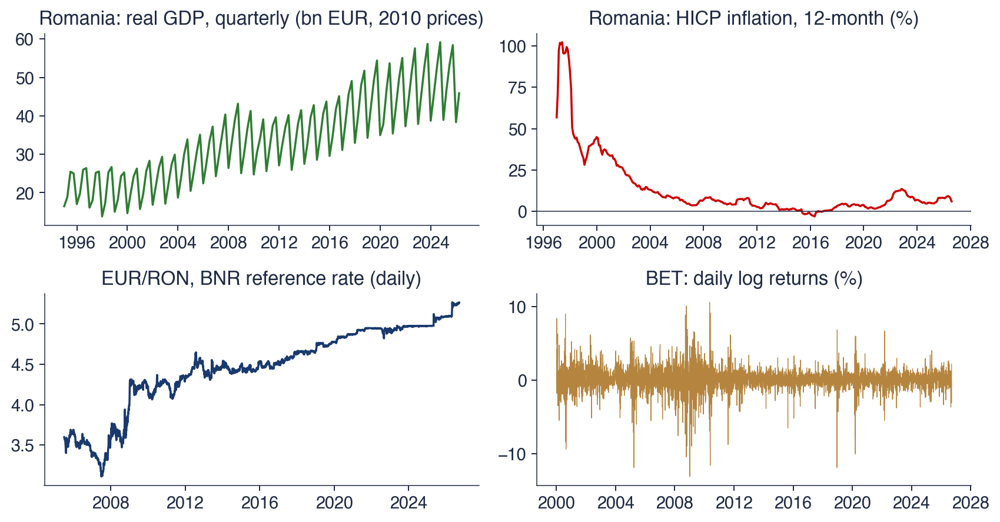

Bucharest University of Economic Studies IDA Institute Digital Assets Blockchain Research Center AI4EFin Artificial Intelligence for Energy Finance Romanian Academy, Institute for Economic Forecasting MSCA Digital Finance
A time series is observed only once. The Romanian GDP of the second quarter of 2020, the BET return of 7 January 2009 or the EUR/RON rate of a given day each have a single recorded value, and history cannot be rerun to see what else might have happened. Statistics, however, is built on repetition: a mean or a variance is a property of a distribution, and a distribution is learned from many draws. The question of this chapter is what one path of a series can reveal about the mechanism that produced it.
The answer rests on two assumptions. Stationarity requires the distribution of the series, or at least its mean and its autocovariances, not to change with time, so that observations from different dates inform the same parameters. Ergodicity requires the dependence between distant observations to die out, so that averages along one long path converge to the averages across all possible paths. Under these assumptions the main descriptive tool is the autocorrelation function (ACF), the correlation of the series with its own past at each lag.
The chapter builds these notions from the definitions to the data. It derives the moments of white noise, of the moving average, of the autoregression and of the random walk; it gives the sampling distribution of the sample ACF and the portmanteau tests of Box and Pierce (1970) and Ljung and Box (1978); and it shows how logarithms, differences and the Box–Cox transformation bring Romanian GDP, BET returns, the S&P 500 and two classic series, the Nile and the sunspots, closer to stationarity.

Four Romanian series of the course: real GDP (quarterly, 1995Q1–2026Q2), HICP inflation (monthly), the EUR/RON reference rate of the BNR (daily) and the daily log returns of the BET index since 2000; each panel shows a different departure from, or approximation to, stationarity.
What you will be able to do
Define a stochastic process and its mean, autocovariance and autocorrelation functions.
Distinguish strict from weak stationarity and check weak stationarity for simple processes.
Derive the moments of white noise, of a moving average, of an autoregression and of a random walk.
Compute and read the sample ACF and PACF with their \(\pm 1.96/\sqrt{T}\) bands.
Test for autocorrelation with the Box–Pierce and Ljung–Box statistics.
Choose a transformation (log, difference, Box–Cox) that brings a real series closer to stationarity.
Possible contribution of AIWhere AI tools help with this chapter's analyses and the checks their output needs.
SummaryKey ideas, formulas and self-assessment questions.
Time series and stochastic processes
This section sets up the language of the course. A time series is a finite record of numbers, but the object of inference is the random mechanism behind it, a stochastic process. The section first looks at four Romanian series that behave in four different ways, then defines the process, shows the difference between one path and the ensemble of all paths, and introduces the three functions that summarise a process up to second order: the mean, the autocovariance and the autocorrelation.
Question for the room The ▶ button moves a 5-year window from 1995–1999 to 2021–2025. Which of the four series has a mean close to the same value in every window?
Answer
The BET returns: the mean is 0.18% in 2000–2004, −0.05% in 2008–2012, 0.03% in 2013–2017 and 0.07% in 2021–2025, all close to 0. The standard deviation changes, however: 1.48%, 2.04%, 0.78% and 0.88%. The mean of real GDP rises from 21.3 bn EUR in 1995–1999 to 48.1 bn EUR in 2021–2025, and the mean of inflation falls from 59.3% in 1995–1999 to 0.82% in 2013–2017: for these series the mean depends on the period.
The chart shows four series that recur throughout the course, each at a different frequency. Romanian real GDP is quarterly, from 1995Q1 to 2026Q2, measured in constant prices (Eurostat). Inflation is the annual rate of the Harmonised Index of Consumer Prices (HICP), monthly (Eurostat). The EUR/RON exchange rate is the daily reference rate published by the National Bank of Romania (BNR). The fourth series is the daily log return of the BET index of the Bucharest Stock Exchange (BVB) since 2000.
Read each panel for two things: whether the series has a fixed level around which it fluctuates, and whether the size of its fluctuations is stable. These two questions anticipate the two conditions of weak stationarity defined in the next section, a constant mean and an autocovariance that does not depend on the date. The four panels answer them differently, which is why the same tools cannot be applied to all four without first transforming some of them.
In brief
Romanian real GDP, 1995Q1–2026Q2 (Eurostat); HICP inflation (Eurostat); EUR/RON, the BNR reference rate; BET daily log returns since 2000
Four frequencies (quarterly, monthly, daily) and four kinds of behaviour
Real GDP rises from 16.5 to 45.9 billion EUR per quarter. It has a trend and a seasonal pattern whose swing grows with the level, so its mean changes with time and its variance grows with the level. Inflation moves slowly and persistently: it was 102% in June 1997, −3.0% in May 2016 and 6.1% in August 2026. A high value this month makes a high value next month likely, which is strong dependence on the past rather than a changing mean in itself.
The EUR/RON rate moves from 3.60 to 5.26 lei and does not return to any fixed level; it is a candidate for the random walk studied in the third section. BET returns, by contrast, oscillate around a constant level close to zero, with extremes of −13.1% on 7 January 2009 and +10.6% on 10 May 2010. Their mean looks stable, but their amplitude is not: the standard deviation of daily returns is 3.62% between September 2008 and March 2009 and 0.66% in 2017.
The four series thus illustrate four departures from the textbook case of independent, identically distributed data: a trend with seasonality, persistence, a level that wanders, and a variance that changes over time. The chapter supplies the concepts to name each of these behaviours and the tools to measure them.
In brief
GDP: from 16.5 to 45.9 bn EUR per quarter; a trend and a seasonal pattern whose swing grows with the level
the mean of the series changes with time
Inflation: 102% in June 1997, \(-\)3.0% in May 2016, 6.1% in August 2026
a slow, persistent movement: this month resembles the previous one
EUR/RON: from 3.60 to 5.26 lei; it wanders without returning to a fixed level
a candidate for a random walk (Section 3)
BET returns: they oscillate around a constant level close to 0; the extremes: \(\ensuremath{-}13.1\%\) on 7 January 2009, \(+10.6\%\) on 10 May 2010
but the amplitude changes: standard deviation 3.62% in September 2008–March 2009, 0.66% in 2017
A time series is a sequence of observations \(x_1, x_2, \dots, x_T\) ordered in time and taken at equal intervals; \(T\) is the sample size and \(t\) the time index, which counts days, months or quarters. The key modelling step is to treat each observation \(x_t\) as the realised value of a random variable \(X_t\). Tomorrow's BET return is unknown today: before it is observed, it has a whole distribution of possible values.
The difficulty is that history runs only once. For each date we see a single draw from the distribution of \(X_t\), never a second one. If the distributions at different dates were unrelated, the \(T\) observations would have to estimate \(T\) different means, one per date, each from a single number, which is impossible. Inference therefore needs assumptions that link the distributions at different dates. Stationarity, which makes the distributions alike across time, and ergodicity, which makes the dependence between distant dates fade, are the two assumptions this chapter develops.
In brief
Time series: observations \(x_1, x_2, \dots, x_T\) ordered in time, at equal intervals
\(T\) = sample size; \(t\) = time index (day, month, quarter)
The key idea: each \(x_t\) is the observed value of a random variable\(X_t\)
the BET return of tomorrow is unknown today: it has a distribution of possible values
history ran only once: we see one value from each distribution
Consequence: we need assumptions that link the distributions at different dates
otherwise \(T\) observations would estimate \(T\) different means
A stochastic process is a family of random variables \(\{X_t : t \in \mathcal{T}\}\) defined on a common probability space \((\Omega, \mathcal{F}, P)\). In this course the index set \(\mathcal{T}\) is the integers \(\mathbb{Z}\) or the finite set \(\{1, \dots, T\}\), that is, time is discrete. An element \(\omega\) of \(\Omega\) can be thought of as one complete possible history of the world, and \(P\) assigns probabilities to sets of histories.
The value \(X_t(\omega)\) depends on two arguments, and fixing either gives a different object. With the date \(t\) fixed, \(X_t\) is a random variable: the set of values the series could take at that date across all histories. With the history \(\omega\) fixed, the function \(t \mapsto X_t(\omega)\) is a path, also called a trajectory or realisation. An observed time series is one path.
A process is characterised by its finite-dimensional distributions, the joint distributions of \((X_{t_1}, \dots, X_{t_k})\) for any finite set of dates \(t_1, \dots, t_k\). They describe everything that can be said about the process from finitely many observations. In practice the full set of joint distributions is rarely needed; the first two moments, defined at the end of this section, already carry most of what linear time series models use.
In brief
Definition: a stochastic process is a family of random variables \(\{X_t : t \in \mathcal{T}\}\) defined on the same probability space \((\Omega, \mathcal{F}, P)\)
\(\mathcal{T} = \mathbb{Z}\) or \(\{1, \dots, T\}\): discrete time, the case of this course
\(\Omega\): the set of possible “histories” \(\omega\); \(P\): their probabilities
Two ways to look at \(X_t(\omega)\)
fix \(t\): \(X_t\) is a random variable (all values possible at date \(t\))
fix \(\omega\): \(t \mapsto X_t(\omega)\) is a path (trajectory, realisation): what we observe
The process is described by its finite-dimensional distributions: the joint distribution of \((X_{t_1}, \dots, X_{t_k})\) for any dates \(t_1, \dots, t_k\)
Question for the room With the same shocks, the ▶ button raises φ from 0 to 0.99. What happens to the band on the left, and is the process still stationary?
Answer
The band widens from ±1.96 to ±13.89, because Var(Xt) = 1/(1 − φ²) rises from 1 to 50.25; the variance of the 40 paths at t = 100 rises from 0.95 to 44.26. For every |φ| < 1, however, the band has the same width at every t: the process stays stationary. For the random walk the band grows with t and reaches ±19.6 at t = 100.
The chart contrasts two processes by drawing many paths of each. On the left are 40 paths of the autoregression \(X_t = 0.7X_{t-1} + \varepsilon_t\), where the shocks \(\varepsilon_t\) are independent and identically distributed (i.i.d.) standard Normal. On the right are 40 paths of the random walk \(X_t = X_{t-1} + \varepsilon_t\) started at \(X_0 = 0\), driven by the same kind of shocks.
The shaded band in each panel marks \(\pm 1.96\) standard deviations of \(X_t\) at each date, the range that contains about 95% of the possible values of \(X_t\) if it is Normal. Read the chart in two directions: horizontally, each line is one possible history; vertically, the cloud of lines above a given date shows the distribution of \(X_t\) at that date. The question the chart poses is whether this vertical distribution looks the same at every date.
In brief
Left: 40 paths of \(X_t = 0.7X_{t-1} + \varepsilon_t\), \(\varepsilon_t \sim N(0, 1)\) i.i.d. (independent and identically distributed); right: 40 paths of \(X_t = X_{t-1} + \varepsilon_t\), \(X_0 = 0\)
The shaded band: \(\pm 1.96\) standard deviations of \(X_t\) at each \(t\)
A vertical slice through the ensemble at date \(t\) shows the distribution of \(X_t\); a single path shows one history. The moments of the process, such as the mean and the variance, are averages across paths at a fixed date, not along one path. This distinction is the core of the chapter: the data provide averages along one path, while the theory is stated in terms of averages across paths.
On the left the band has the same width at every date. For the autoregression with coefficient 0.7 and unit shock variance, the variance is \(\mathrm{Var}(X_t) = 1/(1 - 0.7^2) = 1.96\), so the band is \(\pm 1.96\sqrt{1.96} = \pm 2.74\) at every \(t\). The distribution of \(X_t\) does not depend on \(t\), which is a first picture of stationarity.
On the right the band widens with time. Across 5000 simulated paths of the random walk, the variance of \(X_{100}\) is 100.8, against the theoretical value of 100, because each step adds one unit of variance. The distribution of \(X_t\) changes with \(t\): the random walk is not stationary, and no single variance describes it.
In brief
A vertical slice at date \(t\) shows the distribution of \(X_t\); one path shows one history
the moments of the process (mean, variance) are averages across paths, at a fixed \(t\)
Left: the same band at every \(t\): \(\mathrm{Var}(X_t) = 1/(1 - 0.7^2) = 1.96\), band \(\pm 2.74\)
the distribution of \(X_t\) does not depend on \(t\): a first picture of stationarity
Right: the band widens; across 5000 simulated paths, \(\mathrm{Var}(X_{100}) = 100.8\) (theory: 100)
the distribution changes with \(t\): the random walk is not stationary
Mean, autocovariance and autocorrelation functions
For a process with finite second moments, \(E[X_t^2] < \infty\) for every \(t\), three functions summarise its first two moments. The mean function is \(\mu_t = E[X_t]\). The autocovariance function is
and the autocorrelation function is its normalised version, \(\rho(t, s) = \gamma(t, s)/\sqrt{\gamma(t, t)\,\gamma(s, s)}\). The prefix "auto" signals that the covariance is between the series and itself at two different dates.
Three properties follow directly from the definitions. On the diagonal, \(\gamma(t, t) = \mathrm{Var}(X_t)\) and \(\rho(t, t) = 1\). By the Cauchy–Schwarz inequality, \(|\rho(t, s)| \le 1\) for all dates. In general both functions depend on the two dates separately, so a process observed over \(T\) dates has \(T\) means and \(T(T+1)/2\) distinct autocovariances, far more than the \(T\) observations available.
The example \(X_t = a + bt + \varepsilon_t\), with \(\varepsilon_t\) i.i.d. of mean 0 and variance \(\sigma^2\), shows the functions at work. The mean function \(\mu_t = a + bt\) depends on \(t\); the variance is \(\gamma(t, t) = \sigma^2\) at every date and the autocovariances \(\gamma(t, s) = 0\) for \(t \ne s\). The dependence on time sits entirely in the mean, so this process is not stationary even though its deviations from the line are pure noise.
In brief
For a process with \(E[X_t^2] < \infty\) for every \(t\):
A time series is one path of a stochastic process \(\{X_t\}\). The moments of the process, \(\mu_t\),\(\gamma(t, s)\) and \(\rho(t, s)\), are defined as averages across paths at fixed dates. With a single observed path, these functions can be estimated only if they do not change with time, which is the assumption the next section makes precise.
In brief
A time series is one path of a stochastic process \(\{X_t\}\)
Moments are averages across paths at fixed dates: \(\mu_t\), \(\gamma(t, s)\), \(\rho(t, s)\)
With one path, we must assume these functions do not change with time
Section summary
The section separated the observed series from the process that generates it. The ensemble picture shows the two possible directions of averaging, across paths at a fixed date and along one path over time, and the three functions \(\mu_t\),\(\gamma(t, s)\) and \(\rho(t, s)\)(1.1) are defined in the first direction. The four Romanian series showed that real data violate the simplest assumptions in different ways. The next section defines stationarity, the property that makes these functions estimable from one path.
Stationarity
Stationarity is the assumption that the probabilistic structure of a series does not depend on the calendar date. It comes in two forms. Strict stationarity concerns entire joint distributions; weak stationarity concerns only the mean and the autocovariances. This section defines both, compares them, gives a process that satisfies the weak form but not the strict one, derives the properties every autocovariance function must have, and computes the moments of the two basic linear models, the moving average and the autoregression of order 1.
where \(\overset{d}{=}\) means that the two vectors have the same joint distribution. Shifting the whole window of observation in time leaves its probabilistic content unchanged.
Two consequences show what the definition imposes. With \(k = 1\), all \(X_t\) have the same marginal distribution. With \(k = 2\), the joint distribution of the pair \((X_t, X_{t+h})\) depends only on the lag \(h\), not on the date \(t\). An i.i.d. sequence is the simplest strictly stationary process.
The definition concerns whole distributions, so it does not require moments to exist: an i.i.d. sequence of Cauchy variables is strictly stationary although it has no mean. The price of this generality is that strict stationarity is hard to check from data, since all joint distributions of all orders would have to be compared.
In brief
Definition: \(\{X_t\}\) is strictly stationary if, for every \(k \ge 1\), all dates \(t_1, \dots, t_k\) and every shift \(h\):
\((X_{t_1}, \dots, X_{t_k}) \overset{d}{=} (X_{t_1 + h}, \dots, X_{t_k + h})\), where \(\overset{d}{=}\) means equal joint distributions
Consequences
\(k = 1\): all \(X_t\) have the same distribution
\(k = 2\): the joint distribution of \((X_t, X_{t+h})\) depends only on the lag \(h\)
Example: an i.i.d. sequence is strictly stationary
the definition concerns entire distributions; the moments need not even exist (an i.i.d. Cauchy sequence)
Hard to check from data: we would need all joint distributions
The weaker notion, due to Khintchine (1934), restricts only the first two moments. A process is weakly stationary, also called covariance stationary or second-order stationary, if three conditions hold: (i) \(E[X_t^2] < \infty\) for every \(t\); (ii) \(E[X_t] = \mu\), the same for every \(t\); (iii) \(\mathrm{Cov}(X_t, X_{t+h}) = \gamma(h)\) depends only on the lag \(h\), not on \(t\).
Under these conditions the two-argument functions of the previous section collapse to functions of the lag alone:
with \(\gamma(0) = \mathrm{Var}(X_t)\). The sequence \(\rho(h)\) is the autocorrelation function (ACF). Instead of \(T\) means and \(T(T+1)/2\) autocovariances, there is now one mean and one autocovariance per lag, and every pair of observations at distance \(h\) is evidence about the same number \(\gamma(h)\).
In this course "stationary" means weakly stationary unless stated otherwise. The weak form is what linear models such as ARMA require, and it can be checked, at least informally, from the sample mean and the sample ACF.
In brief
DefinitionKhintchine (1934): \(\{X_t\}\) is weakly stationary (covariance stationary, second-order stationary) if
(i) \(E[X_t^2] < \infty\) for every \(t\)
(ii) \(E[X_t] = \mu\), the same for every \(t\)
(iii) \(\mathrm{Cov}(X_t, X_{t+h}) = \gamma(h)\) depends only on the lag \(h\), not on \(t\)
Then the functions have one argument, the lag\(h\):
Neither definition implies the other without qualification. If a process is strictly stationary and has finite variance, it is weakly stationary: identical marginal distributions give identical means, and identical joint distributions of \((X_t, X_{t+h})\) give identical covariances. The finite variance is essential. An i.i.d. sequence of Student-t variables with 2 degrees of freedom is strictly stationary but has infinite variance, so condition (i) fails and it is not weakly stationary.
In the other direction, weak stationarity fixes only the first two moments, so the shape of the distribution may change over time while the mean and the autocovariances stay fixed; the next frame builds such a process. The exception is the class of Gaussian processes, whose finite-dimensional distributions are all multivariate Normal. A multivariate Normal distribution is fully determined by its means and covariances, so for a Gaussian process weak and strict stationarity coincide.
In brief
Strict + finite variance \(\Rightarrow\) weak
equal distributions give equal means; equal joint distributions of \((X_t, X_{t+h})\) give equal covariances
Weak \(\not\Rightarrow\) strict
weak stationarity fixes only the first two moments; the shape of the distribution may change (next slide)
Strict \(\not\Rightarrow\) weak if the variance is infinite
i.i.d. Student-t with 2 degrees of freedom: strictly stationary, no finite variance
Gaussian processes: all finite-dimensional distributions are multivariate Normal
a Normal distribution is fixed by its means and covariances, so for them weak \(\Leftrightarrow\) strict
Question for the room The ▶ button raises k, the degrees of freedom of the χ² at odd t, from 1 to 60. What changes: the mean and the variance, or the shape of the distribution?
Answer
Only the shape. For every k, (χ²k − k)/√(2k) has mean 0 and variance 1, so the process stays weakly stationary. The theoretical skewness √(8/k) falls from 2.83 at k = 1 to 1.26 at k = 5 and 0.37 at k = 60 (in the sample: 2.80, 1.30, 0.35). P(Xt < −1.6) at odd t is 0 up to k = 5 and 4.2% at k = 60, against 5.9% at even t. For every finite k, the distributions at even and odd t differ, so the process is not strictly stationary.
The chart shows a process built to be weakly but not strictly stationary. The variables \(X_t\) are independent; at even dates \(X_t\) is standard Normal, \(N(0, 1)\), and at odd dates it is a standardised chi-square, \((\chi^2_5 - 5)/\sqrt{10}\). The chi-square with 5 degrees of freedom has mean 5 and variance 10, so both distributions have mean 0 and variance 1.
The left panel plots the first 100 observations: nothing in the path suggests that two distributions alternate. The right panel overlays the histograms of the values at even and at odd dates in a simulated sample of 4000 observations. The sample variances are 0.99 at even dates and 1.00 at odd dates, as the construction requires. The shapes, however, differ: the sample skewness is −0.02 at even dates and 1.30 at odd dates, against theoretical values of 0 and 1.26. Read the two histograms for their symmetry and for their left tail: the odd-date histogram stops abruptly on the left and has a longer right tail.
In brief
Independent \(X_t\): \(N(0, 1)\) for even \(t\), \((\chi^2_5 - 5)/\sqrt{10}\) for odd \(t\); both have mean 0 and variance 1
Sample of 4000: variance 0.99 (even) and 1.00 (odd); skewness \(\ensuremath{-}0.02\) and \(1.30\) (theory: 0 and 1.26)
The process is weakly stationary. At every date \(E[X_t] = 0\) and \(\gamma(0) = 1\), and independence gives \(\gamma(h) = 0\) for \(h \ne 0\). Its mean and its ACF are exactly those of Gaussian white noise, so no tool based on second moments can tell the two apart.
It is not strictly stationary, because the distribution of \(X_t\) alternates between a symmetric one and a right-skewed one. The left tail shows the difference most clearly. The probability \(P(X_t < -1.6)\) is about 5% at even dates, where \(X_t\) is Normal, and exactly 0 at odd dates, since a chi-square variable is non-negative and therefore \(X_t \ge -5/\sqrt{10} = -1.58\).
The lesson is that second moments summarise linear dependence but not the whole distribution. Questions about extreme losses, which depend on the tails, need more than the mean and the ACF; Chapter 5 returns to them with models of conditional volatility.
In brief
Weakly stationary: \(E[X_t] = 0\), \(\gamma(0) = 1\), \(\gamma(h) = 0\) for \(h \ne 0\), at every \(t\)
the ACF cannot tell this process from Gaussian white noise
Not strictly stationary: the distribution of \(X_t\) alternates between symmetric and right-skewed
\(P(X_t < -1.6)\): about 5% for even \(t\), 0 for odd \(t\) (\(X_t \ge -5/\sqrt{10} = -1.58\))
Lesson: second moments summarise dependence, but not the whole distribution; tail risk needs more (Chapter 5)
The autocovariance function of a weakly stationary process has three properties. It is symmetric, \(\gamma(-h) = \gamma(h)\), because \(\mathrm{Cov}(X_t, X_{t-h}) = \mathrm{Cov}(X_{t-h}, X_t)\); this is why correlograms show only non-negative lags. It is bounded by its value at zero, \(|\gamma(h)| \le \gamma(0)\), so \(|\rho(h)| \le 1\). And it is non-negative definite: for any \(n\) and any real numbers \(a_1, \dots, a_n\),
\[\sum_{i,j} a_i a_j\, \gamma(i - j) \ge 0.\]
(1.4)
The proof of (1.4) is one line: the left-hand side is the variance of the linear combination \(\sum_i a_i X_i\), since
The consequence is that not every sequence of numbers between −1 and 1 can be an ACF. Take \(\rho(1) = 0.9\) and \(\rho(2) = -0.9\): neighbours would be almost perfectly positively correlated, yet observations two steps apart almost perfectly negatively correlated. The combination \(X_1 - X_2 + X_3\) exposes the contradiction: its variance would be
which is negative. Non-negative definiteness is also the property that sample estimators of \(\gamma(h)\) must preserve, as the section on the sample ACF shows.
In brief
For a weakly stationary process:
symmetry: \(\gamma(-h) = \gamma(h)\), since \(\mathrm{Cov}(X_t, X_{t-h}) = \mathrm{Cov}(X_{t-h}, X_t)\)
bound: \(|\gamma(h)| \le \gamma(0)\), so \(|\rho(h)| \le 1\)
non-negative definiteness: \(\sum_{i,j} a_i a_j \gamma(i - j) \ge 0\) for all real \(a_1, \dots, a_n\)
The moving average of order 1, MA(1), is \(X_t = \varepsilon_t + \theta\varepsilon_{t-1}\), where \(\{\varepsilon_t\}\) are uncorrelated shocks with mean 0 and variance \(\sigma^2\) and \(\theta\) is the weight of the previous period's shock. Each observation is a combination of today's shock and yesterday's. The mean is \(E[X_t] = 0\), since both shocks have mean 0.
The variance follows by expanding the square: \(\gamma(0) = E[(\varepsilon_t + \theta\varepsilon_{t-1})^2] = \sigma^2(1 + \theta^2)\), because the cross term \(2\theta\varepsilon_t\varepsilon_{t-1}\) has mean 0. At lag 1, the product \((\varepsilon_t + \theta\varepsilon_{t-1})(\varepsilon_{t+1} + \theta\varepsilon_t)\) contains one shock common to both factors, \(\varepsilon_t\), which contributes \(\theta\sigma^2\), so \(\gamma(1) = \theta\sigma^2\). At lags \(|h| \ge 2\) the two observations share no shock and \(\gamma(h) = 0\). Hence
None of these moments depends on \(t\), so the MA(1) is weakly stationary for every value of \(\theta\). With \(\theta = 0.6\) and \(\sigma^2 = 1\), the variance is \(\gamma(0) = 1.36\) and the first autocorrelation is \(\rho(1) = 0.441\). The function \(\theta/(1 + \theta^2)\) reaches its maximum 0.5 at \(\theta = 1\), so an MA(1) can never have \(|\rho(1)| > 0.5\); a sample first autocorrelation well above 0.5 with nothing after it rules this model out.
In brief
\(X_t = \varepsilon_t + \theta\varepsilon_{t-1}\), \(\{\varepsilon_t\}\) uncorrelated, mean 0, variance \(\sigma^2\): the MA(1) (moving average) process
\(\theta\): the weight of the previous shock; \(\varepsilon_t\): the shock of period \(t\)
mean: \(E[X_t] = 0\)
\(\gamma(0) = E[(\varepsilon_t + \theta\varepsilon_{t-1})^2] = \sigma^2(1 + \theta^2)\) (the cross term has mean 0)
The autoregression of order 1, AR(1), is \(X_t = \phi X_{t-1} + \varepsilon_t\) with \(|\phi| < 1\), where \(\phi\) is the weight of the previous value and \(\varepsilon_t\) are uncorrelated shocks with mean 0 and variance \(\sigma^2\), uncorrelated with the past of \(X\). The method here is to assume that the process is stationary and solve for the moments that stationarity implies. Taking expectations gives \(\mu = \phi\mu\), so \(\mu = 0\). Taking variances gives \(\gamma(0) = \phi^2\gamma(0) + \sigma^2\), so \(\gamma(0) = \sigma^2/(1 - \phi^2)\).
For the autocovariances, multiply the equation by \(X_{t-h}\),\(h \ge 1\), and take expectations. The shock \(\varepsilon_t\) is uncorrelated with \(X_{t-h}\), so \(\gamma(h) = \phi\gamma(h - 1)\), and iterating gives
With \(\phi = 0.8\) and \(\sigma^2 = 1\), the variance is \(\gamma(0) = 2.78\), and the autocorrelations are \(\rho(1) = 0.8\),\(\rho(5) = 0.328\) and \(\rho(10) = 0.107\): the ACF decays geometrically, never reaching zero exactly. This geometric decay is the signature of autoregressive dependence in a correlogram.
The derivation also shows where stationarity ends. With \(|\phi| \ge 1\), the formula for \(\gamma(0)\) would give a negative or infinite variance, so no stationary solution of this form exists. The case \(\phi = 1\) is the random walk of the next section; Chapters 2 and 3 treat the general conditions for stationarity and the tests for a unit root.
In brief
\(X_t = \phi X_{t-1} + \varepsilon_t\), \(|\phi| < 1\): the AR(1) (autoregressive) process; assume it is stationary and solve for the moments
\(\phi\): the weight of the previous value; \(\varepsilon_t\): uncorrelated shocks with mean 0 and variance \(\sigma^2\)
Question for the room Which of conditions (ii) and (iii) of weak stationarity fails for series B, C and D?
Answer
Only series A is stationary. B has the deterministic trend μt = 0.04t: condition (ii) fails, and the mean is 2.84 in the first half and 9.05 in the second. C has a standard deviation 7.5 times larger at the end than at the start (1.09 and 2.74 over the two halves): condition (iii) fails at h = 0. D has a level shift of +4 at t = 150, which moves the mean from −0.07 to 4.19: condition (ii).
The chart shows four simulated series of 300 observations each. The same AR(1) noise with \(\phi = 0.5\) underlies all four, so their short-run wiggles look alike; what differs is what has been added to or multiplied into that noise.
The question is which of the two moment conditions of weak stationarity fails in each panel: condition (ii), a constant mean, or condition (iii), an autocovariance that depends only on the lag, which at lag 0 means a constant variance. Before reading the answer, look at each panel for a drifting centre, for a spread that changes along the sample, and for an abrupt change of level.
In brief
Four simulated series, 300 observations each; the same AR(1) noise with \(\phi = 0.5\) underlies all of them
Which of the conditions (ii) and (iii) of weak stationarity fails for each series?
Series A is the stationary AR(1) itself: its mean and variance are constant, and its ACF depends only on the lag. Series B adds a deterministic trend, \(\mu_t = 0.04\,t\), so the mean changes with time and condition (ii) fails. Such a series is called trend-stationary: after the line is subtracted, what remains is stationary.
Series C multiplies the noise by a factor that grows over the sample, so that its standard deviation is 7.5 times larger at the end than at the start. The mean is still constant, but the variance is not, so condition (iii) fails at \(h = 0\). Series D has a level shift of \(+4\) at \(t = 150\): the mean takes one value before the break and another after it, so condition (ii) fails. In real data such a break corresponds to a change of regime or of policy; the Nile series in the last main section is an example.
In practice, a plot of the series is the first check for all three kinds of non-stationarity. Formal tests, which distinguish a deterministic trend from a stochastic one, come in Chapter 3.
In brief
A: stationary AR(1): constant mean and variance, the ACF depends only on the lag
B: deterministic trend, \(\mu_t = 0.04\,t\): condition (ii) fails
a trend-stationary series: stationary around a line, after subtracting the trend
C: the standard deviation grows 7.5 times along the sample: condition (iii) fails at \(h = 0\)
D: a level shift of \(+4\) at \(t = 150\): condition (ii) fails
a structural break; in real data: a change of regime or of policy (the Nile, Section 8)
In practice, a plot of the series is the first check; formal tests come in Chapter 3
Strict stationarity (1.2) requires all joint distributions to be invariant to shifts in time; weak stationarity requires a constant mean and an autocovariance that depends only on the lag (1.3). Strict stationarity with finite variance implies weak stationarity, and for Gaussian processes the two coincide. The MA(1) is stationary for every \(\theta\); the AR(1) is stationary for \(|\phi| < 1\), with \(\rho(h) = \phi^{|h|}\). Trends, changing variance and structural breaks all violate stationarity.
In brief
Strict: all joint distributions are shift-invariant; weak: constant mean, \(\gamma\) depends only on the lag
Strict + finite variance \(\Rightarrow\) weak; for Gaussian processes they coincide
MA(1) is always stationary; AR(1) is stationary for \(|\phi| < 1\), with \(\rho(h) = \phi^{|h|}\)
Trends, changing variance and breaks violate stationarity
Section summary
Weak stationarity reduces the description of a process to one mean and one autocovariance per lag, which is what makes estimation from one path possible. The autocovariance function is symmetric, bounded and non-negative definite (1.4), so not every sequence is an ACF. The two worked examples gave the two shapes that recur in every later chapter: the ACF of the MA(1) (1.5) cuts off after lag 1, and the ACF of the AR(1) (1.6) decays geometrically. The next section introduces the building block of both models, white noise, and the simplest non-stationary process built from it, the random walk.
White noise and the random walk
White noise is the sequence of shocks from which every model of this course is built, and the random walk is what results when those shocks are accumulated. The section defines three versions of white noise of increasing strength and shows by simulation that the weakest version can hide strong dependence in the squares. It then derives the moments of the random walk, shows why it is not stationary, adds a drift, and asks whether the BET index can be told apart from a random walk by eye.
A process \(\{\varepsilon_t\}\) is white noise, written \(\varepsilon_t \sim \mathrm{WN}(0, \sigma^2)\), if it has mean zero, \(E[\varepsilon_t] = 0\), constant variance, \(\mathrm{Var}(\varepsilon_t) = \sigma^2\), and no correlation between different dates, \(\mathrm{Cov}(\varepsilon_t, \varepsilon_s) = 0\) for \(t \ne s\). Its ACF is therefore \(\rho(0) = 1\) and \(\rho(h) = 0\) for every \(h \ne 0\). The name comes from the spectrum: like white light, the process has equal power at all frequencies.
Three versions are used, from the weakest to the strongest. Weak white noise is only uncorrelated; non-linear dependence is allowed, for example between the squares \(\varepsilon_t^2\) and \(\varepsilon_{t-1}^2\).I.i.d., or strong, white noise requires the shocks to be independent and identically distributed, which rules out any dependence. Gaussian white noise is i.i.d. \(N(0, \sigma^2)\); for jointly Normal variables, zero correlation implies independence, so in the Gaussian case the weak and the strong versions coincide.
White noise is the building block of every model in this course. ARMA models filter it linearly, ARIMA models accumulate it, GARCH models scale it by a time-varying volatility, and VAR models extend it to vectors. Which version a model assumes matters: forecasts of the mean need only weak white noise, while statements about the whole distribution need more.
In brief
Definition: \(\{\varepsilon_t\}\) is white noise, \(\varepsilon_t \sim \mathrm{WN}(0, \sigma^2)\), if
\(E[\varepsilon_t] = 0\), \(\mathrm{Var}(\varepsilon_t) = \sigma^2\) and \(\mathrm{Cov}(\varepsilon_t, \varepsilon_s) = 0\) for \(t \ne s\)
so \(\rho(0) = 1\) and \(\rho(h) = 0\) for every \(h \ne 0\)
Three versions, from weakest to strongest
weak white noise: only uncorrelated; non-linear dependence is allowed (for example, in the squares)
i.i.d. (strong) white noise: independent and identically distributed
Gaussian white noise: i.i.d. \(N(0, \sigma^2)\); for jointly Normal variables, uncorrelated means independent
White noise is the building block of every model in this course: ARMA, ARIMA, GARCH, VAR
Question for the room With the same shocks zt, the ▶ button raises the GARCH α from 0 to 0.14 (β = 0.85). What happens to the Ljung–Box test for the squares of the series?
Answer
At α = 0 the conditional variance is constant and the series is Gaussian i.i.d. noise: Q*(10) = 9.3 for the squares, p = 0.507. The statistic rises to 14.5 (p = 0.152) for α = 0.05, to 73.2 (p < 0.001) for α = 0.10 and to 838.9 for α = 0.14, and the kurtosis rises from 3.20 to 5.85. By construction the series stays uncorrelated; the test for Xt nevertheless gives p = 0.028 at α = 0.14, because the band of the test assumes a constant variance.
The chart simulates 1000 values of three white noises, each with variance 1, and shows 500 of them in the top row. The first is Gaussian. The second is Laplace, an i.i.d. distribution with heavier tails than the Normal. The third is a GARCH(1,1) process, the volatility model of Chapter 5: \(\varepsilon_t = \sigma_t z_t\) with \(z_t\) i.i.d. \(N(0, 1)\) and
where \(\sigma_t^2\) is the variance of day \(t\) given the past. The unconditional variance of this GARCH process is \(0.05/(1 - 0.10 - 0.85) = 1\), so all three series have variance 1.
The bottom row shows the sample ACF of the squares \(X_t^2\), not of the series, for lags 1 to 20, with the band \(\pm 1.96/\sqrt{T}\) as dashed lines. In the top row the GARCH series stands out by its alternation of calm and turbulent stretches; in the bottom row this shows up as positive autocorrelation of the squares. All three series are uncorrelated by construction; the question the chart asks is whether they are also independent.
In brief
Top: 500 of 1000 simulated values, variance 1 in all three; bottom: the ACF of the squares \(X_t^2\)
GARCH(1,1) (Chapter 5): \(\sigma_t^2 = 0.05 + 0.10\,\varepsilon_{t-1}^2 + 0.85\,\sigma_{t-1}^2\), \(\varepsilon_t = \sigma_t z_t\); \(\sigma_t^2\): the variance of day \(t\) given the past; \(z_t\): i.i.d. \(N(0, 1)\)
The Ljung–Box statistic \(Q^*(10)\), defined in the section on portmanteau tests, jointly tests the first 10 autocorrelations of each series. Its p-value is 0.278 for the Gaussian series and 0.986 for the Laplace series, so neither is separated from white noise by this test. For the GARCH series the p-value is 0.049, just below 5%, so the test rejects white noise at the 5% level although the series is uncorrelated by construction. When the variance changes over time, the usual test, whose critical values assume i.i.d. data, rejects too often.
The Laplace series has heavier tails than the Normal, with a sample kurtosis of 5.2 against 3.0 for the Normal, but it is still i.i.d.: the Ljung–Box test on its squares gives a p-value of 0.680. Heavy tails alone do not create dependence. For the GARCH series, by contrast, the squares are strongly correlated, with \(Q^*(10) = 73.2\) and a p-value below 0.001.
The GARCH series is therefore a weak white noise that is not i.i.d.: the sign and the level of tomorrow's value cannot be predicted from the past, but its size can. This is volatility clustering, large moves followed by large moves, and daily stock returns behave in exactly this way, as the BET correlograms in the section on the sample ACF show.
In brief
All three are white noise by construction; Ljung–Box \(Q^*(10)\) (Section 6) on \(X_t\): p = 0.278 (Gaussian), 0.986 (Laplace), 0.049 (GARCH)
the GARCH series is close to rejection although it is uncorrelated: with changing variance the usual test rejects too often
Laplace: heavier tails (kurtosis 5.2 against 3.0), but still i.i.d.: the squares are uncorrelated (p = 0.680)
heavy tails alone do not create dependence
GARCH: the squares are strongly correlated, \(Q^*(10) = 73.2\), p \(<\) 0.001
a weak white noise: unpredictable sign and level, predictable size (volatility clustering)
The random walk is defined by \(X_t = X_{t-1} + \varepsilon_t\) for \(t \ge 1\), with \(X_0 = 0\) and \(\varepsilon_t \sim \mathrm{WN}(0, \sigma^2)\). Substituting backwards gives \(X_t = \sum_{i=1}^{t}\varepsilon_i\): the level is the sum of all past shocks. Every shock stays in the level forever, since \(\partial X_{t+h}/\partial\varepsilon_t = 1\) for all \(h \ge 0\); nothing pulls the series back to where it was.
Uncorrelated shocks suffice to derive the moments. The mean is \(E[X_t] = 0\). The variance of a sum of uncorrelated terms is the sum of their variances, so \(\mathrm{Var}(X_t) = t\sigma^2\). For \(t \le s\), the two sums \(\sum_{i \le t}\varepsilon_i\) and \(\sum_{j \le s}\varepsilon_j\) share exactly the first \(t\) shocks, so
The random walk is not stationary for two reasons: its variance grows with \(t\), and its autocorrelation depends on the dates themselves, not only on their distance \(s - t\). Two observations ten periods apart have correlation \(\rho(X_{100}, X_{110}) = \sqrt{100/110} = 0.953\) late in the sample, but \(\rho(X_{10}, X_{20}) = \sqrt{0.5} = 0.707\) early in the sample. The same lag gives different correlations, which condition (iii) forbids.
Question for the room The ▶ button moves the date t from 10 to 250. Does the correlation between Xt and Xt+10 depend only on the distance of 10 periods?
Answer
No. Over the 5000 paths, the correlation is 0.708 between X10 and X20 and 0.954 between X100 and X110, like the theoretical values √(t/s) = 0.707 and 0.953. For a stationary process the correlation would depend only on the lag. The variance also grows with t: 10.1 at t = 10, 98.1 at t = 100 and 249.1 at t = 250 (theoretical tσ²).
The left panel draws 60 random-walk paths with \(\sigma = 1\) together with the band \(\pm 1.96\sqrt{t}\), which widens like the square root of time because the standard deviation of \(X_t\) is \(\sqrt{t}\,\sigma\). The right panel plots, against \(t\), the variance of \(X_t\) computed across 5000 simulated paths, with the theoretical line \(t\sigma^2\).
At \(t = 250\) the simulated variance is 249.1, against the theoretical value of 250, and 5.0% of the paths lie outside the band, as a 95% band for a Normal variable implies. The straight line on the right is the visual form of (1.7): variance accumulates linearly with the number of shocks.
In brief
Left: 60 paths with \(\sigma = 1\) and the band \(\pm 1.96\sqrt{t}\); right: the variance of \(X_t\) across 5000 paths and the line \(t\sigma^2\)
At \(t = 250\): simulated variance 249.1 (theory: 250); share of paths outside the band: 5.0%
The spread of the paths grows like \(\sqrt{t}\), so uncertainty about the level accumulates without bound. A forecast of the level 100 days ahead made today has error variance \(100\sigma^2\), since the 100 future shocks are all unknown and all permanent. For stationary processes, in contrast, the forecast error variance converges to the finite variance of the series.
The paths look as if they had trends and cycles: long climbs, long declines, apparent turning points. Nothing but chance drives them. This is the lesson of Slutzky (1937): sums of random shocks can look like economic cycles, and a pattern seen in one path is not evidence of a systematic mechanism.
Across the simulated paths, the correlation between \(X_{100}\) and \(X_{110}\) is 0.953, equal to the theoretical value of 0.953. Levels far apart in time remain highly correlated because they share most of their shocks, so the sample ACF of a random walk decays very slowly; this is the pattern to look for in the correlograms later in the chapter.
In brief
The spread grows like \(\sqrt{t}\): uncertainty about the level accumulates
a forecast of the level 100 days ahead has variance \(100\sigma^2\)
Paths look like they have trends and cycles, although nothing but chance drives them
the same lesson as Slutzky (1937): sums of random shocks can look like economic cycles
Simulated \(\rho(X_{100}, X_{110}) = 0.953\) against 0.953 in theory
levels far apart in time are still highly correlated: very slow ACF decay
Adding a constant \(c\) to each step gives the random walk with drift, \(X_t = c + X_{t-1} + \varepsilon_t\) with \(X_0 = 0\), so that \(X_t = ct + \sum_{i=1}^{t}\varepsilon_i\). The drift \(c\) produces a linear trend in the mean, \(E[X_t] = ct\), while the variance is still \(\mathrm{Var}(X_t) = t\sigma^2\). The first difference, \(\Delta X_t = X_t - X_{t-1} = c + \varepsilon_t\), is stationary: white noise plus a constant. A series that becomes stationary after differencing is called difference-stationary, and the accumulated shocks form a stochastic trend.
Compare it with the trend-stationary series \(Y_t = a + bt + u_t\), where \(u_t\) is stationary, \(a\) is the intercept and \(b\) the slope of the trend. Both series have a linear mean, and over a finite sample they can look alike. They react differently to shocks: in \(Y_t\) a shock to \(u_t\) fades and the series returns to its line, while in \(X_t\) every shock shifts the whole future path. Forecasts of \(Y_t\) have bounded error variance; forecasts of \(X_t\) do not.
Deciding which of the two describes a given series is the unit-root problem of Chapter 3. For financial data the usual starting point is the random walk with drift: log prices of stocks and indices are often close to a random walk with a small positive drift, which is why their changes, the returns, are the object of analysis.
In brief
\(X_t = c + X_{t-1} + \varepsilon_t\), \(X_0 = 0\): \(X_t = ct + \sum_{i=1}^{t}\varepsilon_i\); \(c\) is the drift
\(E[X_t] = ct\): a linear trend in the mean; \(\mathrm{Var}(X_t) = t\sigma^2\) as before
The first difference is stationary: \(\Delta X_t = X_t - X_{t-1} = c + \varepsilon_t\)
a difference-stationary series, with a stochastic trend
Compare with the trend-stationary \(Y_t = a + bt + u_t\), \(u_t\) stationary; \(a\): intercept, \(b\): slope of the trend
both have a linear mean; in \(Y_t\) shocks fade, in \(X_t\) they last forever
telling the two apart is the unit-root problem of Chapter 3
Log prices of stocks and indices are often close to a random walk with a small positive drift
The BET index is the reference index of the Bucharest Stock Exchange (BVB), computed since 19 September 1997. The analysis in this chapter uses its daily closing levels since 2000, which give 6,670 log returns \(r_t = 100\,\Delta\ln P_t\), where \(P_t\) is the closing level on day \(t\); multiplying by 100 expresses the returns in percent. Their standard deviation is 1.40% per day.
If the log price \(\ln P_t\) were a random walk with drift, the returns \(r_t\) would be white noise around a constant mean. The next frame puts this hypothesis to a first, visual test, by hiding the BET among simulated random walks with the same drift and the same daily volatility.
Question for the room One panel is the log price of the BET over its last 500 trading days, the other five are random walks with the same drift and the same daily standard deviation. Which panel is the BET?
Answer
Series D: the BET, 11 September 2024 – 18 September 2026. By eye it cannot be told apart from the random walks. Its daily changes set it apart: ρ̂(1) = 0.123, and the p-value of the Ljung–Box test Q*(10) is 0.018, the only one below 5% among the six series; for the simulated random walks the p-values lie between 0.377 and 0.911.
The chart shows six panels, labelled A to F. One is the BET log price over its last 500 trading days; the other five are random walks simulated with the same drift and the same daily standard deviation as the BET over that period. Each panel plots the change in the log price since the first day, in percent, on its own vertical scale.
The question is which panel is the BET. Look for features that a random walk could not produce: a level to which the series returns, smoother or rougher stretches than chance would give, or a trend too regular to be accumulated noise. Ask yourself also what it would mean if no panel stood out.
In brief
One panel: the BET log price over its last 500 trading days; five panels: random walks with the same drift and the same daily standard deviation
Series D is the BET, from 11 September 2024 to 18 September 2026; over this period its mean daily change is 0.13% and its standard deviation 0.99%. By eye it cannot be told apart from the five random walks: long rises, pauses and setbacks of the kind seen in the index are exactly what accumulated random shocks produce.
The data are nevertheless not exactly a random walk. The first-order autocorrelation of the daily changes is 0.12, and the Ljung–Box test of the first 10 autocorrelations, \(Q^*(10)\), has a p-value of 0.018, so white noise is rejected at the 5% level. These departures are small and invisible in the level, where the accumulated shocks dominate the picture, but they show up in the ACF of the differences.
The lesson is methodological: the level of a price series hides its dependence, while its changes reveal it. The rest of the chapter therefore studies changes, with the ACF and the portmanteau tests as the main tools.
In brief
Series D is the BET, 11 September 2024 to 18 September 2026: mean daily change 0.13%, standard deviation 0.99%
by eye, it cannot be told apart from the random walks
The data are not exactly a random walk: the first-order autocorrelation of the daily changes is 0.12; Ljung–Box \(Q^*(10)\) p-value 0.018
small departures, invisible in the level, show up in the ACF of the differences
Lesson: study the changes, not the level; the tools are the ACF and the portmanteau tests (Sections 5–6)
White noise has mean 0, constant variance and no autocorrelation; it comes in weak, i.i.d. and Gaussian versions. Uncorrelated does not mean independent: the squares of a weak white noise can be strongly correlated. The random walk has \(\mathrm{Var}(X_t) = t\sigma^2\) and \(\rho(t, s) = \sqrt{t/s}\), so it is not stationary, while its first difference is white noise. Trend-stationary and difference-stationary series can look alike but react differently to shocks.
In brief
White noise: mean 0, constant variance, no autocorrelation; weak, i.i.d. or Gaussian
Uncorrelated is not independent: the squares of a weak white noise can be correlated
Random walk: \(\mathrm{Var}(X_t) = t\sigma^2\), \(\rho(t, s) = \sqrt{t/s}\): not stationary; its difference is white noise
Trend-stationary and difference-stationary series look alike but react differently to shocks
Section summary
White noise is the elementary unit of the course, and the distinction between its weak and its i.i.d. versions is the distinction between unpredictable levels and unpredictable sizes. The random walk (1.7) accumulates white noise into a series whose variance grows without bound and whose correlations depend on the date; adding a drift gives the stochastic trend typical of log prices. The BET example showed that the level of a price series hides small but significant dependence that appears only in its changes. The next section gives the algebra for moving between levels and changes, the lag operator and differencing, and the theorem that represents every stationary process through white noise.
The lag operator, differencing and the Wold decomposition
This section supplies the notation and the two theoretical results on which the following chapters rest. The lag operator turns time series models into polynomial algebra, and differencing, written with the lag operator, is the main way to turn a non-stationary series into a stationary one. The Wold decomposition shows that every stationary process is a weighted sum of white-noise shocks, and ergodicity states when averages along a single path recover the moments of the process.
The lag operator\(L\) shifts a series back by one period, \(LX_t = X_{t-1}\); its powers shift by more periods, \(L^kX_t = X_{t-k}\), and \(L^0 = 1\) leaves the series unchanged. Some texts write \(B\), for backshift. A constant is unchanged by the operator, \(Lc = c\), since a constant has the same value at every date.
A lag polynomial of degree \(p\) is \(\phi(L) = 1 - \phi_1L - \dots - \phi_pL^p\), with real coefficients \(\phi_1, \dots, \phi_p\); applied to a series it gives \(\phi(L)X_t = X_t - \phi_1X_{t-1} - \dots - \phi_pX_{t-p}\). The two models of the previous section become compact: the AR(1) is \((1 - \phi L)X_t = \varepsilon_t\) and the MA(1) is \(X_t = (1 + \theta L)\varepsilon_t\). Lag polynomials multiply like ordinary polynomials, for example \((1 - L)(1 + L) = 1 - L^2\).
The operator can also be inverted. For \(|\phi| < 1\) the geometric series gives
so the AR(1) is an infinite moving average of past shocks with geometrically declining weights. The condition \(|\phi| < 1\) makes the weights summable; it is the same condition that made the variance in (1.6) finite. ARMA, ARIMA and SARIMA models in Chapters 2 to 4 are all written with lag polynomials.
In brief
Definition: \(LX_t = X_{t-1}\); powers: \(L^kX_t = X_{t-k}\), \(L^0 = 1\) (also written \(B\), the backshift operator)
The first difference is \(\Delta X_t = (1 - L)X_t = X_t - X_{t-1}\) and the second difference is \(\Delta^2X_t = (1 - L)^2X_t = X_t - 2X_{t-1} + X_{t-2}\). The seasonal difference with period \(s\) is \(\Delta_sX_t = (1 - L^s)X_t = X_t - X_{t-s}\), which compares each observation with the same season of the previous year: \(s = 4\) for quarterly data and \(s = 12\) for monthly data.
A small example shows the mechanics. For \(x = (10, 12, 15, 14, 18)\) the first differences are \(\Delta x = (2, 3, -1, 4)\) and the second differences are \(\Delta^2x = (1, -4, 5)\). Each round of differencing loses one observation at the start of the sample, and a seasonal difference loses \(s\) observations.
Differencing removes specific kinds of non-stationarity. A linear trend becomes a constant, \(\Delta(a + bt) = b\), and a quadratic trend needs \(\Delta^2\). A random walk becomes white noise, \(\Delta X_t = \varepsilon_t\), and a seasonal pattern that repeats exactly every \(s\) periods is removed by \(\Delta_s\). A process is integrated of order \(d\), written \(X_t \sim I(d)\), if \(\Delta^dX_t\) is stationary while \(\Delta^{d-1}X_t\) is not. White noise is \(I(0)\) and the random walk is \(I(1)\); how to test the order \(d\) is the subject of Chapter 3.
Question for the room The bottom panel shows the returns, Δ ln Pt. What ρ̂(1) does the second difference, Δ² ln Pt, have?
Answer
−0.543. The returns are already close to white noise (ρ̂(1) = −0.099), and the difference of white noise is an MA(1) with ρ(1) = −0.5: one more difference creates negative autocorrelation and raises the standard deviation from 1.21% to 1.80%. The level ln Pt has an ACF of 0.999 at lag 1 and 0.973 at lag 50; at lag 1 the ACF stays above 0.99 for every start of the sample between 2000 and 2024.
The chart applies the first difference to a real price series. The top panel plots the logarithm of the S&P 500 index since 2000; the bottom panel plots its first difference, the daily log return, over 6,714 trading days up to 18 September 2026.
Read the two panels for the properties of the previous sections. In the top panel, look for a fixed level to which the series returns and for the speed at which past values are forgotten. In the bottom panel, look for a constant mean and for whether the amplitude of the returns stays the same over time; the years 2008 and 2020 deserve particular attention.
In brief
Top: the log of the S&P 500 index since 2000; bottom: the daily log returns, 6 714 days to 18 September 2026
The log price behaves like a random walk. Its sample autocorrelation is 0.999 at lag 1 and still 0.973 at lag 50: the level is correlated with its whole past, as (1.7) predicts for a process that accumulates shocks.
The log returns have a constant level: their mean is 0.025% per day and their standard deviation 1.21%, and their first-order autocorrelation is −0.099. One difference removed the stochastic trend and produced a series that fluctuates around a fixed mean, as the random walk with drift implies.
The returns are not yet white noise in the strict sense. Quiet and turbulent periods alternate, with clusters of large moves in 2008 and 2020, so the variance is predictable even if the mean is hardly so. The returns are close to a weak white noise; modelling their variance is the subject of Chapter 5.
In brief
Log price: sample ACF 0.999 at lag 1 and still 0.973 at lag 50
the behaviour of a random walk: the level remembers everything
Log returns: mean 0.025% per day, standard deviation 1.21%; ACF at lag 1: \(\ensuremath{-}0.099\)
a constant level: one difference removed the stochastic trend
Not yet white noise in the strict sense: quiet and turbulent periods alternate (2008, 2020)
the returns are close to a weak white noise; their variance is the subject of Chapter 5
Here \(\varepsilon_t\) is white noise and has a precise meaning: it is the error of the best linear forecast of \(X_t\) from its own past, called the innovation. The term \(\eta_t\) is a deterministic part, perfectly predictable from the distant past, such as a fixed cycle; for most series in practice it is absent.
The theorem says that any stationary series is a weighted sum of past shocks, a moving average of infinite order, MA(\(\infty\)). The weight \(\psi_j\) measures the effect on \(X_{t+j}\) of a unit shock at time \(t\), so the sequence \(\psi_0, \psi_1, \dots\) is the impulse response of the process. The condition \(\sum_j\psi_j^2 < \infty\) makes the variance finite.
The decomposition explains why the models of the following chapters work. The weights \(\psi_j\) form an infinite sequence and cannot be estimated one by one, but ARMA models (Chapter 2) approximate them with a few parameters. The AR(1) of (1.8), with \(\psi_j = \phi^j\), is the simplest case: one parameter generates the whole sequence.
In brief
TheoremWold (1938): every weakly stationary process with mean 0 can be written as
Question for the room The ▶ button raises φ in the first panel from 0 to 1. What happens to Σψj²?
Answer
It rises: Σψj² = 1/(1 − φ²) is 1 at φ = 0, 2.78 at φ = 0.8 and 10.26 at φ = 0.95, where ψ10 = 0.599. At φ = 1, ψj = 1 for every j, as for the random walk, and the sum is infinite: the process no longer has a Wold form and is no longer stationary.
The chart plots the Wold weights \(\psi_j\) for \(j = 0, \dots, 15\) of four processes: the AR(1) with \(\phi = 0.8\), the AR(1) with \(\phi = -0.6\), the MA(1) with \(\theta = 0.6\), and the random walk. Each bar is the effect of a shock after \(j\) periods.
For the AR(1) with \(\phi = 0.8\) the weights are \(\psi_j = 0.8^j\), so \(\psi_5 = 0.328\) and \(\psi_{10} = 0.107\), the same numbers as the autocorrelations in (1.6). The variance follows from the weights: \(\mathrm{Var}(X_t) = \sigma^2\sum_j\psi_j^2 = 2.78\,\sigma^2\), which equals \(\sigma^2/(1 - 0.8^2)\). Compare the four shapes: how quickly the bars shrink, whether they change sign, and whether they shrink at all.
In brief
\(\psi_j\), \(j = 0, \dots, 15\): AR(1) with \(\phi = 0.8\) and \(\phi = -0.6\), MA(1) with \(\theta = 0.6\), and the random walk
For the three stationary processes the weights tend to zero, \(\psi_j \to 0\): shocks fade, and the variance \(\sigma^2\sum_j\psi_j^2\) is finite. With \(\phi = -0.6\) the effect alternates in sign, so a positive shock today implies a negative effect next period, a positive one after two periods, and so on, with shrinking amplitude. For the MA(1) the effect stops after one period: \(\psi_1 = \theta\) and \(\psi_j = 0\) for \(j \ge 2\).
For the random walk \(\psi_j = 1\) for every \(j\), so \(\sum_j\psi_j^2 = \infty\): there is no Wold representation and no stationarity. Economically, this is a permanent shock, such as a technology shock that raises GDP for good, or news that changes a price once and for all.
The weights also fix the autocovariances. Since the shocks are uncorrelated, only products of shocks at the same date contribute to \(\mathrm{Cov}(X_t, X_{t+h})\), and
\[\gamma(h) = \sigma^2\sum_{j}\psi_j\psi_{j+h}.\]
(1.10)
The ACF is therefore a summary of the impulse response, and the two shapes of the previous section follow from (1.10): one non-zero weight after \(\psi_0\) gives an ACF that cuts off after lag 1, geometric weights give a geometric ACF.
In brief
Stationary processes: \(\psi_j \to 0\), so shocks fade and the variance \(\sigma^2\sum_j\psi_j^2\) is finite
\(\phi < 0\): the effect alternates in sign; MA(1): the effect stops after one period
Random walk: \(\psi_j = 1\) for all \(j\), \(\sum_j\psi_j^2 = \infty\): no Wold form, no stationarity
the economic meaning: a permanent shock (a technology shock to GDP, news in a price)
The ACF is fixed by the weights: \(\gamma(h) = \sigma^2\sum_j\psi_j\psi_{j+h}\)
Stationarity says that the moments are constant over time. It does not yet say that they can be estimated from one path. Two averages must be distinguished: the ensemble mean\(\mu = E[X_t]\), an average across all possible paths at a fixed date, and the time mean\(\bar X_T = \frac1T\sum_{t=1}^{T}X_t\), an average along the single observed path.
A stationary process is ergodic for the mean if \(\bar X_T \to \mu\) in mean square as \(T \to \infty\). A sufficient condition is that the autocovariance dies out, \(\gamma(h) \to 0\) as \(h \to \infty\): observations far apart then carry nearly independent information. If the autocovariances are absolutely summable, \(\sum_h|\gamma(h)| < \infty\), the rate is also known:
The right-hand side of (1.11), the long-run variance, replaces \(\gamma(0)\) in the usual formula for the variance of a mean; positive autocorrelation inflates it.
Stationarity alone is not enough. Let \(X_t = Z + \varepsilon_t\), where \(Z \sim N(0, 1)\) is drawn once and stays fixed along the path, and \(\varepsilon_t\) is white noise independent of \(Z\). The process is stationary, with mean 0 and \(\gamma(h) = \mathrm{Var}(Z) = 1\) for every \(h \ne 0\), an autocovariance that never dies out. Along one path the white noise averages away and \(\bar X_T \to Z\), not \(\mu = 0\).
In brief
Stationarity says the moments are constant; we still need to estimate them from one path
ensemble mean: \(\mu = E[X_t]\) (across paths); time mean: \(\bar X_T = \frac1T\sum_{t=1}^{T}X_t\) (along one path)
Definition: a stationary process is ergodic for the mean if \(\bar X_T \to \mu\) (in mean square) as \(T \to \infty\)
a sufficient condition: \(\gamma(h) \to 0\) as \(h \to \infty\) (correlation dies out)
if \(\sum_h|\gamma(h)| < \infty\), then \(T\,\mathrm{Var}(\bar X_T) \to \sum_{h=-\infty}^{\infty}\gamma(h)\)
Counterexample: \(X_t = Z + \varepsilon_t\), \(Z \sim N(0, 1)\) drawn once, \(\varepsilon_t\) white noise
stationary, with \(\gamma(h) = 1\) for every \(h \ne 0\); \(\bar X_T \to Z\), not \(\mu = 0\)
Question for the room The ▶ button raises φ from 0 to 0.99. Is the AR(1) on the left still ergodic for the mean?
Answer
Yes: for every |φ| < 1, γ(h) → 0, so X̄T → 0. Convergence is slower, however: the standard deviation of X̄2000 is about 1/((1 − φ)√T), that is 0.022 at φ = 0, 0.075 at φ = 0.7 and 2.24 at φ = 0.99, and the final values of the 6 paths lie between −0.04 and 0.03, between −0.13 and 0.09, and between −3.66 and 3.00. On the right, with sd(Z) = 0, Xt becomes white noise and all the averages approach 0.
The chart plots the running mean \(\bar X_T\) along 6 paths, for \(T\) up to 2,000 on a logarithmic horizontal axis, for two stationary processes with mean 0. On the left is the AR(1) with \(\phi = 0.7\), whose autocovariance decays geometrically; on the right is the process \(X_t = Z + \varepsilon_t\) of the previous frame.
Read each line as the estimate of the mean that a researcher with that one history would obtain as more data arrive. The final values lie between −0.13 and 0.09 on the left, all close to the true mean 0, and between −0.95 and 1.16 on the right, each close to the value of \(Z\) drawn for that path.
In brief
Running mean \(\bar X_T\) along 6 paths, \(T\) up to 2 000: AR(1) with \(\phi = 0.7\) (left) and \(X_t = Z + \varepsilon_t\) (right)
Final values: between \(\ensuremath{-}0.13\) and \(0.09\) on the left; between \(\ensuremath{-}0.95\) and \(1.16\) on the right, close to the drawn \(Z\)
On the left every path "learns" the true mean 0: one long history is as informative as many independent histories. Convergence is slow when the correlation is strong. For an AR(1), (1.11) gives approximately
so with \(\phi = 0.7\) the variance of the time mean is \(1.7/0.3 \approx 5.7\) times larger than it would be for independent data with the same variance.
On the right each path converges to its own \(Z\), and no amount of data from one path reveals that the ensemble mean is 0. An economy with a permanent, unobserved "type", such as a fixed level of institutional quality or productivity, behaves like this: its long history reveals its own type, not the average over all economies that could have existed.
Ergodicity cannot be tested from a single path, because the path alone cannot show what other paths would have looked like. It is an assumption made, explicitly or not, every time moments are estimated from one series.
In brief
Left: every path “learns” the true mean 0; one long history is as good as many histories
convergence is slow when the correlation is strong: \(\mathrm{Var}(\bar X_T) \approx \gamma(0)(1 + \phi)/((1 - \phi)T)\)
Right: each path converges to its own \(Z\); no amount of data from one path reveals \(\mu = 0\)
an economy with a permanent, unobserved “type” behaves like this
Ergodicity cannot be tested from one path; it is assumed whenever we estimate moments from a single series
The lag operator shifts a series, \(L^kX_t = X_{t-k}\); differences are \(\Delta = 1 - L\) and seasonal differences \(\Delta_s = 1 - L^s\); an \(I(d)\) process becomes stationary after \(d\) differences. By the Wold theorem (1.9), a stationary process is an MA(\(\infty\)) of its innovations with square-summable weights. Ergodicity allows time averages to estimate ensemble moments, and it requires correlations that die out.
Wold: a stationary process is an MA(\(\infty\)) of its innovations, with \(\sum\psi_j^2 < \infty\)
Ergodicity lets time averages estimate ensemble moments; it needs correlations that die out
Section summary
Lag polynomials turn models into algebra, and their inversion (1.8) links autoregressions to moving averages. Differencing removes linear trends, stochastic trends and exact seasonality, and the S&P 500 showed one difference turning a random-walk-like level into returns with a stable mean. The Wold decomposition (1.9) represents every stationary process through its innovations, and (1.10) shows that the ACF summarises the impulse response. Ergodicity (1.11) is the final link between theory and data: it is what allows a single long series to estimate the mean and the autocovariances, which is the task of the next section.
Sample ACF and PACF
With stationarity and ergodicity assumed, the mean and the ACF can be estimated from one path. This section defines the sample autocovariance and autocorrelation, derives the confidence bands under white noise, and checks them by simulation. It then compares sample and theoretical ACFs for four processes, introduces the partial autocorrelation function (PACF), which isolates the direct effect of each lag, and applies both tools to the daily returns of the BET.
and the sample ACF is \(\hat\rho(h) = \hat\gamma(h)/\hat\gamma(0)\). The plot of \(\hat\rho(h)\) against \(h\) is the correlogram. Each term of the sum pairs an observation with the one \(h\) periods later; there are \(T - h\) such pairs.
The divisor in (1.12) is \(T\), not the number of pairs \(T - h\). With divisor \(T\) the sequence \(\hat\gamma(h)\) is non-negative definite, like a true autocovariance (Brockwell and Davis, 2016), so the estimated ACF always satisfies (1.4). The price is a small bias towards zero at large lags, where few pairs are averaged but the sum is still divided by \(T\). For this reason correlograms are usually read only up to \(h \le T/4\).
A worked example fixes the arithmetic. For \(x = (3, 5, 4, 6, 7)\) the mean is \(\bar x = 5\) and the deviations are \((-2, 0, -1, 1, 2)\). Then \(\hat\gamma(0) = 10/5 = 2.0\),\(\hat\gamma(1) = (0 + 0 - 1 + 2)/5 = 0.2\) and \(\hat\gamma(2) = (2 + 0 - 2)/5 = 0.0\), so \(\hat\rho(1) = 0.10\) and \(\hat\rho(2) = 0.00\). With \(T = 5\), the 95% band for white noise, defined next, is \(\pm 0.88\): far too wide for five observations to say anything about dependence.
In brief
From \(x_1, \dots, x_T\), with the sample mean \(\bar x = \frac1T\sum_t x_t\):
The bands drawn on correlograms come from a large-sample result of Bartlett (1946). If \(X_t\) is i.i.d. with finite variance, then for large \(T\) the sample autocorrelations \(\hat\rho(1), \dots, \hat\rho(m)\) are approximately independent and Normal with mean 0 and variance \(1/T\). A 95% band is therefore \(\pm 1.96/\sqrt{T}\), and a bar outside it rejects \(\rho(h) = 0\) at the 5% level, for that lag taken alone.
When the process is not white noise, the variance of \(\hat\rho(h)\) changes. For an MA(\(q\)), at lags beyond the cut-off, \(h > q\), Bartlett's formula gives
These are the wider bands that `plot_acf` in `statsmodels` draws by default, growing with the lag; they test whether the ACF has cut off after lag \(h - 1\), which is the question of model identification in Chapter 2.
Two traps follow from the per-lag nature of the band. First, with 20 lags and no correlation at all, about one bar is expected outside the band by chance, so a single crossing is weak evidence. Second, the band assumes i.i.d. data; for a weak white noise with changing variance, such as GARCH returns, the true sampling variability of \(\hat\rho(h)\) is larger and the correct band is wider.
In brief
Large-sample result of Bartlett (1946): if \(X_t\) is i.i.d. with finite variance, for large \(T\)
\(\hat\rho(1), \dots, \hat\rho(m)\) are approximately independent \(N(0, 1/T)\)
95% band: \(\pm 1.96/\sqrt{T}\); a bar outside it rejects \(\rho(h) = 0\) at 5%, for that lag alone
For an MA(\(q\)), at lags \(h > q\): \(\mathrm{Var}(\hat\rho(h)) \approx \frac1T\big(1 + 2\sum_{k=1}^{q}\rho(k)^2\big)\)
the wider bands of statsmodelsplot_acf (Chapter 2)
Two traps
with 20 lags and no correlation, about one bar is expected outside the band by chance
the band assumes i.i.d. data; for a weak white noise (GARCH returns) the true band is wider
Question for the room The ▶ button raises the number of lags m from 1 to 20, on the same 10000 samples of white noise. How often is at least one bar outside the band?
Answer
More and more often: in 4.5% of the samples at m = 1, 20.3% at m = 5 and 50.3% at m = 20, although there is no correlation at all. With independent tests it would be 1 − 0.95m: 5.0%, 22.6% and 64.2%; at large lags Var(ρ̂(h)) < 1/T, so slightly fewer bars fall outside. At m = 20, on average 0.73 bars fall outside.
The chart checks Bartlett's result by simulation. It draws 10,000 samples of Gaussian white noise of length \(T = 100\), for which the band is \(\pm 1.96/\sqrt{100} = \pm 0.196\). The left panel is the histogram of \(\hat\rho(1)\) across the 10,000 samples, with the Normal approximation \(N(0, 1/T)\) for comparison.
The right panel counts, in each sample, how many of the first 20 sample autocorrelations fall outside \(\pm 0.196\), and compares the simulated shares with the Binomial(20, 0.05) distribution that 20 independent tests of size 5% would give. Since every true autocorrelation is zero, each count is a count of false alarms. Read the left panel for the centre and spread of \(\hat\rho(1)\), and the right panel for how often a correlogram of pure noise shows at least one bar outside the band.
In brief
10000 samples of Gaussian white noise with \(T = 100\): \(\hat\rho(1)\) (left) and the number of lags, out of 20, outside \(\pm 0.196\) (right)
Across the samples, \(\hat\rho(1)\) has a mean of −0.008, close to the exact small-sample mean of \(-1/T = -0.01\), and a standard deviation of 0.098, close to \(1/\sqrt{T} = 0.1\). Bartlett's approximation is already good at \(T = 100\). The small negative mean comes from estimating \(\bar x\) from the same data, which forces the deviations to sum to zero.
In 50% of the samples at least one of the 20 bars lies outside the band, although there is no correlation at all. If the 20 tests were independent and each had exact size 5%, the share would be \(1 - 0.95^{20} = 64\%\). It is slightly lower because at distant lags the variance of \(\hat\rho(h)\) is below \(1/T\), an effect of the divisor \(T\) in (1.12), so fewer bars cross.
The practical rule is not to over-read single bars. A correlogram should be judged by its pattern, such as a decay, a cut-off or a seasonal spike, or by a joint test of many lags, the subject of the next section.
In brief
\(\hat\rho(1)\): mean \(\ensuremath{-}0.008\) (theory \(-1/T = -0.01\)), standard deviation 0.098 (theory \(1/\sqrt{T} = 0.1\))
Bartlett's approximation is already good at \(T = 100\)
At least one of 20 bars outside the band in 50% of the samples, although there is no correlation at all
independent tests would give \(1 - 0.95^{20} = 64\%\); at distant lags \(\mathrm{Var}(\hat\rho(h)) < 1/T\), so slightly fewer bars cross
Do not over-read single bars: judge the pattern, or use a joint test (Section 6)
Question for the room The ▶ button raises T from 50 to 500. What happens to the sample ACF of the random walk at lag 10?
Answer
It rises: ρ̂(10) is −0.08 at T = 50, 0.37 at T = 100 and 0.55 at T = 500. The random walk has no theoretical ACF, and the decay of its sample ACF depends on the length of the sample. For the AR(1) with φ = 0.8, ρ̂(10) approaches the theoretical value 0.11: −0.14 at T = 50, 0.11 at T = 100 and 0.09 at T = 500, while the band narrows from ±0.277 to ±0.088.
The chart compares, for four processes, the sample ACF of \(T = 500\) simulated values (bars) with the theoretical ACF (dots). The band is \(\pm 1.96/\sqrt{500} = \pm 0.088\). The four processes are white noise, the AR(1) with \(\phi = 0.8\), the MA(1) with \(\theta = 0.6\) and the random walk.
For each panel, compare the bars with the dots: how close the estimates are to the truth, and how the shape of the bars differs from one process to another. The random-walk panel has no dots, for a reason given below.
For white noise all bars are small. The largest, \(\hat\rho(2) = 0.08\), lies inside the band and is noise. For the AR(1) with \(\phi = 0.8\) the bars decay geometrically, with \(\hat\rho(1) = 0.81\) and \(\hat\rho(2) = 0.65\) against theoretical values of 0.80 and 0.64 from (1.6).
For the MA(1) with \(\theta = 0.6\) there is a single spike, \(\hat\rho(1) = 0.44\), equal to the theoretical 0.44 from (1.5), and nothing beyond it: the ACF cuts off after lag 1. Decay versus cut-off is the first distinction used to identify a model from its correlogram.
For the random walk the sample ACF is \(\hat\rho(1) = 0.95\) and still 0.55 at lag 10, a slow, almost linear decay. This is the typical correlogram of a non-stationary series. It has no theoretical counterpart, since \(\rho(h)\) is not defined for a process whose autocorrelation depends on the date; the bars only describe the sample, and they signal that the series should be differenced before its ACF is interpreted.
In brief
White noise: all bars small; the largest, \(\hat\rho(2) = 0.08\), is noise
The ACF at lag \(h\) mixes direct and indirect dependence: in an AR(1), \(X_t\) is correlated with \(X_{t-2}\) only because both are linked through \(X_{t-1}\). The partial autocorrelation function (PACF) removes the indirect part. Its value at lag \(h\),\(\phi_{hh}\), is the last coefficient of the best linear predictor of \(X_t\) from \(X_{t-1}, \dots, X_{t-h}\):
where \(\phi_{h1}, \dots, \phi_{hh}\) are the coefficients of the regression on \(h\) lags and \(e_t\) is the prediction error. Equivalently, \(\phi_{hh}\) is the correlation between \(X_t\) and \(X_{t-h}\) after removing the linear effect of the lags in between.
In general the PACF is computed from the ACF by the Durbin–Levinson recursion; the sample PACF uses \(\hat\rho(h)\) in place of \(\rho(h)\). Under white noise its bands are the same as those of the ACF, \(\pm 1.96/\sqrt{T}\).
Two examples show what (1.14) captures. For an AR(1), \(\rho(2) = \rho(1)^2\), so \(\phi_{22} = 0\): once \(X_{t-1}\) is known, \(X_{t-2}\) adds nothing. For an AR(2) with \(\phi_1 = 0.5\) and \(\phi_2 = 0.3\), the autocorrelations are \(\rho(1) = 0.714\) and \(\rho(2) = 0.657\), and \(\phi_{22} = (0.657 - 0.510)/(1 - 0.510) = 0.300\), exactly the second autoregressive coefficient \(\phi_2\). The PACF at lag \(p\) recovers the last coefficient of an AR(\(p\)), and it is zero beyond \(p\).
In brief
Definition: the PACF at lag \(h\), \(\phi_{hh}\), is the last coefficient of the best linear predictor of \(X_t\) from \(X_{t-1}, \dots, X_{t-h}\):
\(X_t = \phi_{h1}X_{t-1} + \dots + \phi_{hh}X_{t-h} + e_t\); \(\phi_{h1}, \dots, \phi_{hh}\): the coefficients of the regression on \(h\) lags; \(e_t\): the prediction error
the correlation of \(X_t\) and \(X_{t-h}\) after removing the linear effect of the lags in between
Question for the room The ▶ button moves the AR(2) φ₂ from −0.4 to 0.45. Which value does the sample PACF at lag 2 follow?
Answer
The coefficient φ₂: φ̂22 = −0.40 for φ₂ = −0.4, −0.03 for φ₂ = 0 and 0.38 for φ₂ = 0.45 (in theory, φ22 = φ₂). φ̂33 stays inside the band (0.05, 0.04, −0.01): the PACF cuts off after lag 2. ρ̂(2) does not follow φ₂: at φ₂ = 0 it is 0.28, close to ρ(2) = φ₁² = 0.25.
The chart shows the sample ACF (top row) and the sample PACF (bottom row) of \(T = 500\) simulated values from three processes: an AR(1) with \(\phi = 0.7\), an AR(2) with \(\phi_1 = 0.5\) and \(\phi_2 = 0.3\), and an MA(1) with \(\theta = 0.7\). Each column is one process, so the two functions can be compared for the same data.
Read the columns for where each function cuts off and where it decays. For each process, one of the two functions should show a small number of clear spikes and then nothing, and the other a gradual decay, possibly with alternating signs.
In brief
\(T = 500\) simulated values of AR(1), AR(2) and MA(1); top: sample ACF; bottom: sample PACF
For the AR(1) with \(\phi = 0.7\) the ACF decays, while the PACF has a single spike, \(\hat\phi_{11} = 0.73\), followed by \(\hat\phi_{22} = 0.03\), inside the band. For the AR(2) the PACF has two spikes, with \(\hat\phi_{22} = 0.24\) against the theoretical 0.3, and then \(\hat\phi_{33} = 0.01\). The number of PACF spikes gives the order of the autoregression.
The MA(1) is the mirror image. Its ACF has a single spike, \(\hat\rho(1) = 0.46\), and its PACF alternates in sign and decays, with values −0.34 at lag 2 and 0.26 at lag 3. An MA(1) can be inverted into an AR(\(\infty\)), so its partial autocorrelations never cut off.
These patterns give the identification rule developed in Chapter 2 (Huang and Petukhina, 2022): a PACF that cuts off after lag \(p\) points to an AR(\(p\)), an ACF that cuts off after lag \(q\) points to an MA(\(q\)), and two functions that both decay point to a mixed ARMA model.
In brief
AR(1): the ACF decays; the PACF has one spike, \(\hat\phi_{11} = 0.73\), then \(\hat\phi_{22} = 0.03\)
AR(2): two PACF spikes, \(\hat\phi_{22} = 0.24\) (theory 0.3), then \(\hat\phi_{33} = 0.01\)
MA(1): the mirror image; one ACF spike (\(\hat\rho(1) = 0.46\)), a PACF that alternates and decays (\(\ensuremath{-}0.34\), \(0.26\), ...)
The tools now move from simulated to real data. The next frames show the ACF of the daily log returns of the BET since 2000, of their absolute values and of their squares. The same analysis for the EUR/RON reference rate published by the National Bank of Romania and for the S&P 500 is task B2 of Seminar 1.
The question is whether BET returns are white noise, and if so, of which kind. The ACF of the returns answers the first part; the ACF of their absolute values and squares answers the second, because a weak white noise can have correlated squares while an i.i.d. one cannot.
Question for the room Select the S&P 500. Do its returns have the same first-order autocorrelation as the BET? And their squares?
Answer
For the returns, no: ρ̂(1) = −0.099 for the S&P 500 and 0.109 for the BET (0.170 for EUR/RON). For the squares, yes: ρ̂(1) = 0.31 for the S&P 500 and 0.33 for the BET, with Q*(10) = 6133 and 2440. The sign of the autocorrelation of returns differs from one market to another, while volatility clustering appears in all three. If the BET sample starts in 2013, ρ̂(1) falls to 0.054 for the returns and to 0.18 for the squares.
The chart shows three correlograms of the 6,670 daily BET log returns, for lags 1 to 50: of the returns \(r_t\), of their absolute values \(|r_t|\) and of their squares \(r_t^2\). With \(T = 6{,}670\) the white-noise band is \(\pm 1.96/\sqrt{6670} = \pm 0.024\), very narrow, so even small correlations lie outside it.
Compare the height of the bars across the three panels, and their persistence: whether the correlation vanishes after a few lags or stays positive up to lag 50.
For the returns, \(\hat\rho(1) = 0.109\), clearly outside the band, and the Ljung–Box statistic for the first 10 lags is \(Q^*(10) = 108\). The dependence is statistically significant but economically small: the squared first-order autocorrelation, \(\hat\rho(1)^2 = 1.2\%\), is the share of today's return variance that a linear forecast from yesterday's return explains. Positive first-order autocorrelation of index returns is a typical sign of a less liquid market, where some stocks in the index do not trade every day and their prices react to news with a delay (non-synchronous trading).
For the absolute returns \(\hat\rho(1) = 0.40\), and the correlation is still 0.11 at lag 50; for the squared returns \(\hat\rho(1) = 0.33\). Large moves follow large moves, in either direction: this is volatility clustering, with a long memory in the size of returns.
BET returns are therefore close to a weak white noise, like the GARCH series of the white-noise section and unlike the i.i.d. Laplace series. Their mean is hardly predictable, but their variance is, and Chapter 5 builds the models that exploit this.
The sample ACF is \(\hat\rho(h) = \hat\gamma(h)/\hat\gamma(0)\) with divisor \(T\), read up to about lag \(T/4\). Under i.i.d. data \(\hat\rho(h)\) is approximately \(N(0, 1/T)\), which gives the band \(\pm 1.96/\sqrt{T}\), and about one bar in 20 crosses it by chance. The PACF measures the direct effect of lag \(h\): an AR(\(p\)) cuts off in the PACF, an MA(\(q\)) in the ACF. Daily returns show weak linear dependence and strong non-linear dependence.
In brief
\(\hat\rho(h) = \hat\gamma(h)/\hat\gamma(0)\), with divisor \(T\); use lags up to about \(T/4\)
Under i.i.d. data: \(\hat\rho(h) \approx N(0, 1/T)\), band \(\pm 1.96/\sqrt{T}\); 1 bar in 20 crosses by chance
PACF: direct effect of lag \(h\); AR(\(p\)) cuts off in the PACF, MA(\(q\)) in the ACF
Returns: small linear, strong non-linear dependence
Section summary
The sample ACF (1.12) estimates the autocorrelation of one path, and Bartlett's result gives its sampling variability: \(1/T\) under i.i.d. data, more under MA dependence (1.13) or changing variance. The simulation showed that half of all pure-noise correlograms of 20 lags contain a false alarm. Comparing the ACF with the PACF (1.14) distinguishes autoregressive from moving-average dependence, and the BET correlograms showed the characteristic profile of daily returns: small correlation in the returns, strong and persistent correlation in their size. Because single bars are unreliable, the next section turns to tests that combine many lags into one statistic.
Portmanteau tests: Box–Pierce and Ljung–Box
A correlogram tests each lag separately, which multiplies false alarms and wastes the information in many small correlations. Portmanteau tests combine the first \(m\) sample autocorrelations into a single statistic. This section defines the Box–Pierce and Ljung–Box statistics, works through one example by hand, compares their behaviour in small samples by simulation, and applies the Ljung–Box test to the real series of the chapter.
The null hypothesis is that the series is white noise up to lag \(m\),\(H_0: \rho(1) = \dots = \rho(m) = 0\), against the alternative \(H_1\) that at least one \(\rho(h) \ne 0\). A test of this kind is called portmanteau, after the travelling case that carries many items: one statistic carries \(m\) autocorrelations.
The Box–Pierce statistic of Box and Pierce (1970) is \(Q(m) = T\sum_{h=1}^{m}\hat\rho(h)^2\). Its distribution follows from Bartlett's result: under \(H_0\) each \(\sqrt{T}\hat\rho(h)\) is approximately standard Normal and the \(m\) of them are approximately independent, so the sum of their squares is approximately chi-square with \(m\) degrees of freedom. The Ljung–Box statistic of Ljung and Box (1978) reweights the terms:
The weight \((T + 2)/(T - h)\) is larger than 1 and grows with \(h\). It corrects the fact, seen in the previous section, that the variance of \(\hat\rho(h)\) is smaller than \(1/T\) at distant lags; both statistics have the same \(\chi^2(m)\) limit.
The decision rule compares \(Q^*(m)\) with \(\chi^2_{0.95}(m)\), the 95% quantile of the chi-square distribution with \(m\) degrees of freedom, and rejects \(H_0\) at 5% if the statistic is larger; for example \(\chi^2_{0.95}(10) = 18.31\). Equivalently, the p-value, the probability under \(H_0\) of a statistic at least as large as the one observed, is compared with 0.05. When the test is applied to the residuals of an estimated ARMA(\(p, q\)) model, the reference distribution becomes \(\chi^2(m - p - q)\), because estimation uses up \(p + q\) degrees of freedom (Chapter 2).
In brief
\(H_0\): \(\rho(1) = \dots = \rho(m) = 0\) (the series is white noise up to lag \(m\)); \(H_1\): at least one \(\rho(h) \ne 0\)
a portmanteau test: one statistic “carries” \(m\) autocorrelations
The Box–Pierce statistic, from Box and Pierce (1970): \(Q(m) = T\sum_{h=1}^{m}\hat\rho(h)^2\)
under \(H_0\), each \(\sqrt{T}\hat\rho(h) \approx N(0, 1)\), independent: the sum of \(m\) squares is \(\approx \chi^2(m)\)
The Ljung–Box statistic, from Ljung and Box (1978): \(Q^*(m) = T(T + 2)\sum_{h=1}^{m}\dfrac{\hat\rho(h)^2}{T - h}\)
the weight \((T + 2)/(T - h)\) corrects the small variance of \(\hat\rho(h)\) at distant lags; same \(\chi^2(m)\) limit
Reject \(H_0\) at 5% if \(Q^* > \chi^2_{0.95}(m)\); for example \(\chi^2_{0.95}(10) = 18.31\)
\(\chi^2(m)\): the chi-square distribution with \(m\) degrees of freedom; \(\chi^2_{0.95}(m)\): its 95% quantile
p-value: the probability under \(H_0\) of a statistic at least as large as the observed one; reject if it is below 0.05
on residuals of an ARMA(\(p, q\)): \(\chi^2(m - p - q)\) (Chapter 2)
Take \(T = 100\) observations with sample autocorrelations \(\hat\rho(1) = 0.25\),\(\hat\rho(2) = 0.12\) and \(\hat\rho(3) = -0.08\). The band is \(\pm 0.196\), so only \(\hat\rho(1)\) lies outside it. The squared autocorrelations are 0.0625, 0.0144 and 0.0064, so the Box–Pierce statistic is \(Q(3) = 100 \cdot 0.0833 = 8.33\), and the Ljung–Box statistic, with the weights of (1.15), is
The critical value is \(\chi^2_{0.95}(3) = 7.81\), so \(H_0\) is rejected; the p-value of \(Q^*(3)\) is 0.035. The series is not white noise, and the correlogram shows that the dependence is concentrated at lag 1. The test says only that some correlation exists; the ACF says where.
The choice of \(m\) involves a trade-off. Too small an \(m\) misses dependence at distant lags, such as seasonal correlation; too large an \(m\) dilutes a few strong correlations among many zero ones and lowers the power of the test. Common choices are \(m = 10\) for non-seasonal data and \(m = 2s\) for seasonal data with period \(s\)(Hyndman and Athanasopoulos, 2021).
Question for the room With T = 50, the ▶ button raises m from 1 to 20. How do the two tests move away from the 5% level?
Answer
In opposite directions. Box–Pierce rejects the true hypothesis in 4.5% of the samples at m = 1, in 4.0% at m = 10 and in 2.4% at m = 20; Ljung–Box in 5.2%, 7.4% and 9.4%. With T = 500 and m = 20 the rates are 5.0% and 5.9%. This is why we keep m well below T (for example, m ≤ T/5).
The chart reports a size simulation: the share of 5000 samples of Gaussian white noise in which each test rejects the true null hypothesis at the 5% level. A test with correct size rejects a true null in 5% of samples; a higher share means false alarms, a lower share means the test is too conservative and loses power.
The bars are grouped in six pairs, for sample sizes \(T = 50\), 100 and 500 and for \(m = 10\) and \(m = 20\) lags; the dashed line marks the nominal 5%. Read each pair of bars against this line: which statistic is closer to it, and how the gap depends on \(T\) and on how large \(m\) is relative to \(T\).
In brief
Share of 5000 Gaussian white-noise samples in which each test rejects a true \(H_0\) at the 5% level
With \(T = 50\) and \(m = 20\), the Box–Pierce test rejects in 2.4% of samples and the Ljung–Box test in 9.4%. Box–Pierce rejects too rarely: with few observations its statistic is too small, so it can miss real dependence. Ljung–Box errs in the other direction when \(m\) is large relative to \(T\), because its weights \((T + 2)/(T - h)\) become large at the last lags.
With \(T = 500\) and the same \(m = 20\), the rejection rates are 5.0% for Box–Pierce and 5.9% for Ljung–Box, both close to the nominal 5%. With enough data the two statistics agree and the chi-square approximation is reliable.
In practice the Ljung–Box test is used, and it is the default in statistical software. The number of lags should stay well below the sample size, for example \(m \le T/5\), which with \(T = 50\) means at most 10 lags.
In brief
\(T = 50\), \(m = 20\): Box–Pierce rejects in 2.4% of samples, Ljung–Box in 9.4%
Box–Pierce is too lenient: it misses dependence; Ljung–Box errs the other way when \(m\) is large relative to \(T\)
\(T = 500\), \(m = 20\): 5.0% and 5.9%: both close to 5%
Practice: use Ljung–Box (the default in software), and keep \(m\) well below \(T\) (for example \(m \le T/5\))
Question for the room If the sample starts in 2025 (about 425 days), does the Ljung–Box test with m = 10 still reject white noise for the BET returns?
Answer
No: Q*(10) = 14.3, p = 0.161, below the critical value 18.31. On the full sample, with 6670 days, Q*(10) = 108.0, p < 0.001. The small autocorrelation of the BET returns (ρ̂(1) = 0.11) needs many observations to be separated from noise; the non-rejection does not show that the series is white noise. The squares reject on the short sample too: Q*(10) = 68.6 for the BET and 103.0 for the S&P 500.
The chart plots, for six real series, the Ljung–Box statistic \(Q^*(m)\) as a function of \(m = 1, \dots, 30\): the daily returns of the S&P 500, of the BET and of EUR/RON, the squared returns of the S&P 500 and of the BET, and the quarter-on-quarter growth of Romanian GDP. The statistics are drawn on a logarithmic scale, together with the 5% critical value \(\chi^2_{0.95}(m)\) as a dashed line. A series is consistent with white noise up to lag \(m\) when its curve lies below the dashed line at that \(m\).
The logarithmic scale is needed because the statistics differ by orders of magnitude across series. Read the vertical distance between each curve and the dashed line as the strength of the evidence against white noise, and the slope of each curve as an indication of whether the dependence is concentrated at the first lags or spread over many.
In brief
\(Q^*(m)\) for \(m = 1, \dots, 30\) (log scale) against the 5% critical value \(\chi^2_{0.95}(m)\) (dashed)
The table reports, for each series, the sample size \(T\), the sample autocorrelations at lags 1 and 4, the statistic \(Q^*(10)\) and its p-value. Every series rejects white noise, with p-values below 0.001. For S&P 500 daily returns \(Q^*(10) = 96.3\) with \(\hat\rho(1) = -0.10\); for BET returns \(Q^*(10) = 108.0\) with \(\hat\rho(1) = 0.11\); for EUR/RON returns \(Q^*(10) = 221.7\) with \(\hat\rho(1) = 0.17\).
For the squared returns the statistics are tens of times larger than for the returns themselves: 6132.8 for the S&P 500, against 96.3 for its returns, and 2440.0 for the BET, against 108.0. The dependence in daily financial returns lies mainly in their size, not in their sign, as the BET correlograms already showed.
A rejection says only that some correlation exists, not where or of what form. The ACF locates it. For Romanian GDP growth quarter on quarter, \(\hat\rho(4) = 0.96\) and \(Q^*(10) = 364.8\): the dependence is the season, at lag 4. For year-on-year growth \(\hat\rho(1) = 0.63\) and \(\hat\rho(4) = 0.03\), with \(Q^*(10) = 75.0\): the seasonal correlation is gone and the remaining dependence is business-cycle persistence. Monthly HICP inflation has \(\hat\rho(1) = 0.40\) and \(Q^*(10) = 126.7\). The Nile (\(\hat\rho(1) = 0.50\),\(Q^*(10) = 88.1\)) and the sunspots (\(\hat\rho(1) = 0.82\),\(\hat\rho(4) = -0.28\),\(Q^*(10) = 627.4\)) are discussed in the section on the two classic series.
In brief
Series
\(T\)
\(\hat\rho(1)\)
\(\hat\rho(4)\)
\(Q^*(10)\)
p
S&P 500, daily returns
6 714
\(\ensuremath{-}0.10\)
\(\ensuremath{-}0.03\)
96.3
\(<\) 0.001
S&P 500, squared returns
6 714
\(0.31\)
\(0.31\)
6132.8
\(<\) 0.001
BET, daily returns
6 670
\(0.11\)
\(\ensuremath{-}0.01\)
108.0
\(<\) 0.001
BET, squared returns
6 670
\(0.33\)
\(0.13\)
2440.0
\(<\) 0.001
EUR/RON, daily returns
5 352
\(0.17\)
\(\ensuremath{-}0.06\)
221.7
\(<\) 0.001
GDP Romania, q/q growth
125
\(\ensuremath{-}0.24\)
\(0.96\)
364.8
\(<\) 0.001
GDP Romania, y/y growth
122
\(0.63\)
\(0.03\)
75.0
\(<\) 0.001
HICP Romania, monthly inflation
260
\(0.40\)
\(0.12\)
126.7
\(<\) 0.001
Nile, yearly flow
100
\(0.50\)
\(0.24\)
88.1
\(<\) 0.001
Sunspots, yearly
309
\(0.82\)
\(\ensuremath{-}0.28\)
627.4
\(<\) 0.001
Every series rejects white noise; for the squared returns the statistic is tens of times larger than for the returns
Rejection says only that some correlation exists; the ACF shows where (GDP: lag 4, the season)
The Box–Pierce statistic \(Q(m)\) and the Ljung–Box statistic \(Q^*(m)\) sum the squared sample autocorrelations of the first \(m\) lags, and both are approximately \(\chi^2(m)\) under white noise. Ljung–Box has better size in small samples, provided \(m\) stays well below \(T\). A rejection is a signal to model the dependence, not a model; and under GARCH effects the test applied to returns rejects too often.
In brief
Box–Pierce \(Q(m)\) and Ljung–Box \(Q^*(m)\) sum the squared sample autocorrelations; both \(\approx \chi^2(m)\) under white noise
Ljung–Box has better size in small samples; keep \(m\) well below \(T\)
A rejection is a signal to model, not a model; under GARCH effects the test of returns rejects too often
Section summary
Portmanteau tests turn a correlogram into one decision. The Ljung–Box statistic (1.15) has a size close to 5% in samples of a few hundred observations, while the Box–Pierce statistic rejects too rarely in small samples. On the real series every test rejects white noise, but the reasons differ: seasonality in quarterly GDP, persistence in inflation, small linear dependence in returns and strong dependence in squared returns. Several of these series reject because they have not yet been transformed properly; the next section shows how logs, differences and the Box–Cox transformation prepare a series for analysis.
Transformations
Few economic series are stationary as published. Positive series with exponential growth have variances that grow with the level, and trends and seasonal patterns move the mean. This section explains why and in what order to transform a series, applies logs and differences to Romanian real GDP, chooses a Box–Cox transformation for Romanian nominal GDP, and shows the damage done by differencing a series that did not need it.
A transformation has three possible goals. The first is to stabilise the variance, for example when seasonal swings grow with the level of the series. The second is to turn exponential growth into a linear trend. The third is to remove a stochastic trend or a seasonal pattern, which differencing does. The first two concern the scale of the series, the third its dynamics.
The logarithm serves the first two goals. Its difference is the growth rate in continuous terms, and for small changes \(100\,\Delta\ln Y_t\) is approximately the percentage change: \(\ln 1.03 = 0.0296\), about 3%. The approximation fails for large changes: \(\ln 1.30 = 0.262\) for a 30% rise and \(\ln 0.70 = -0.357\) for a 30% fall. The log change has one property that percentages lack: log changes add up over time, so the log change over a year is the sum of the twelve monthly log changes.
For a positive series with a trend and seasonality the order of operations matters: first the log, which stabilises the variance, then the differences, which remove the trend and the season. The log of a difference is not defined when the difference is negative, and differencing first would leave the variance growing with the level.
In brief
Goals
stabilise the variance (seasonal swings that grow with the level)
turn exponential growth into a linear trend
remove a stochastic trend or a seasonal pattern (differencing)
Logarithm: \(\ln Y_t\); its difference is the growth rate in continuous terms
\(100\,\Delta\ln Y_t \approx\) percentage change for small changes: \(\ln 1.03 = 0.0296\), about 3%
not for large ones: \(\ln 1.30 = 0.262\), \(\ln 0.70 = \ensuremath{-}0.357\); log changes add up over time, percentages do not
Order of operations for a trending, seasonal, positive series
first the log (variance), then the differences (trend, season); never the other way round
Romanian real GDP: log, quarterly and annual growth
Question for the room The ▶ button raises the lag k of the difference on the right from 1 to 8. For which k does the seasonal spike of the ACF at lag 4 disappear?
Answer
For k = 4: ρ̂(4) = 0.03. For k = 1, 2, 3 and 5, ρ̂(4) stays between 0.94 and 0.96: a difference that does not cover a whole year keeps the season. k = 8 removes the season too, but ρ̂(4) = 0.52, because two two-year growth rates one year apart share a year. The annual growth rate, k = 4, has a mean of 2.73% and ρ̂(1) = 0.63.
The chart applies these transformations to Romanian real GDP: quarterly, not seasonally adjusted, in 2010 prices (Eurostat), from 1995Q1 to 2026Q2. The top row shows three series: the log level \(\ln Y_t\), the quarter-on-quarter growth \(\Delta\ln Y_t\) and the annual growth \(\Delta_4\ln Y_t\), which compares each quarter with the same quarter of the previous year. The bottom row shows the sample ACF of each.
Read each column for the two features that differencing is meant to remove: the trend, which shows in the correlogram as slow decay, and the season, which shows as peaks at lags 4, 8, 12 and so on. A good transformation leaves a correlogram that dies out after a few lags.
In brief
Quarterly, not seasonally adjusted, 2010 prices (Eurostat), 1995Q1–2026Q2; top: the series; bottom: their sample ACF
The log level \(\ln Y_t\) has a sample ACF of 0.68 at lag 1 and 0.87 at lag 8, with peaks every 4 quarters. The trend makes all autocorrelations large, and the season makes those at multiples of 4 larger still, so the series is as strongly correlated with itself two years back as with the previous quarter.
The quarter-on-quarter growth \(\Delta\ln Y_t\) has no trend, but the season dominates: \(\hat\rho(4) = 0.96\) and \(\hat\rho(2) = -0.49\), and the standard deviation is 27.5%. A quarter-on-quarter rate computed from unadjusted data mostly measures the seasonal pattern, the regular difference between, for example, a winter and a summer quarter, rather than economic news.
The annual growth \(\Delta_4\ln Y_t\) has a mean of 2.7%, and its ACF dies out after 2–3 quarters, with \(\hat\rho(1) = 0.63\) and \(\hat\rho(4) = 0.03\). It is close to stationary, with the persistence of the business cycle. Its extremes are economic events, not seasonal artefacts: −9.9% in 2020Q2 and −2.0% in the last quarter of the sample.
In brief
\(\ln Y_t\): ACF 0.68 at lag 1 and 0.87 at lag 8, with peaks every 4 quarters: trend and season
\(\Delta\ln Y_t\): the trend is gone, the season dominates: \(\hat\rho(4) = 0.96\), \(\hat\rho(2) = \ensuremath{-}0.49\); standard deviation 27.5%
a quarter-on-quarter rate of unadjusted data mostly measures the season
\(\Delta_4\ln Y_t\) (annual growth): mean 2.7%, the ACF dies out after 2–3 quarters (\(\hat\rho(1) = 0.63\), \(\hat\rho(4) = 0.03\))
close to stationary, with business-cycle persistence; 2020Q2: \(\ensuremath{-}9.9\%\); last quarter: \(\ensuremath{-}2.0\%\)
The parameter \(\lambda\) controls the strength of the transformation: \(\lambda = 1\) leaves the shape unchanged (it only shifts the series by 1), \(\lambda = 0.5\) is essentially the square root, \(\lambda = 0\) is the log and \(\lambda = -1\) the inverse. The family is continuous in \(\lambda\), since \((y^\lambda - 1)/\lambda \to \ln y\) as \(\lambda \to 0\), which is why the log takes the place of the formula at zero.
A worked example shows how \(\lambda\) compresses large values. For \(y = 100\) and \(y = 400\),\(\lambda = 0.5\) gives \(w = 18\) and \(w = 38\), so a four-fold ratio becomes about two-fold; \(\lambda = 0\) gives \(w = 4.605\) and \(w = 5.991\). The smaller \(\lambda\), the more large values are compressed relative to small ones.
The parameter \(\lambda\) is chosen by the method of Guerrero (1993), as in Hyndman and Athanasopoulos (2021). The series is split into blocks, for example years, and \(\lambda\) is chosen so that the ratio \(\mathrm{sd}_i/\mathrm{mean}_i^{1-\lambda}\), where \(\mathrm{sd}_i\) and \(\mathrm{mean}_i\) are the standard deviation and the mean of block \(i\), is as constant as possible across blocks. Forecasts are made for \(w\) and transformed back with \(y = (\lambda w + 1)^{1/\lambda}\); because the transformation is non-linear, the back-transformed forecast is the median of the forecast distribution, not its mean.
In brief
DefinitionBox and Cox (1964), for \(y > 0\): \(w = \dfrac{y^\lambda - 1}{\lambda}\) for \(\lambda \ne 0\), \(w = \ln y\) for \(\lambda = 0\)
\(\lambda = 1\): no change in shape; \(\lambda = 0.5\): square root; \(\lambda = 0\): log; \(\lambda = -1\): inverse
continuous in \(\lambda\): \((y^\lambda - 1)/\lambda \to \ln y\) as \(\lambda \to 0\)
Worked example: \(y = 100\) and \(y = 400\)
\(\lambda = 0.5\): \(w = 18\) and \(38\); \(\lambda = 0\): \(w = 4.605\) and \(5.991\)
the smaller \(\lambda\), the more large values are compressed
split the series into years; choose \(\lambda\) so that \(\mathrm{sd}_i/\mathrm{mean}_i^{1-\lambda}\) is as constant as possible across years; \(\mathrm{sd}_i\), \(\mathrm{mean}_i\): the standard deviation and the mean of year \(i\)
Forecasts are made for \(w\) and transformed back: \(y = (\lambda w + 1)^{1/\lambda}\); the back-transformed value is the median, not the mean
Question for the room With λ = 1 (no transformation), how many times larger is the seasonal amplitude in the last five years than in the first five?
Answer
10.5 times: 3059 million EUR in the first five years and 32155 in the last five, because the seasonal swing is a stable share of the level. With λ = 0, the logarithm, the ratio is 1.07 (0.392 and 0.420), and Guerrero's criterion, 0.243, is practically the minimum reached at λ̂ = 0.02; at λ = 1 the criterion is 0.677.
The chart applies Guerrero's method to Romanian quarterly nominal GDP, not seasonally adjusted, which rises from 6.4 to 95.2 billion EUR over the sample. The blocks are years of 4 quarters. One panel plots the criterion, the variability of \(\mathrm{sd}_i/\mathrm{mean}_i^{1-\lambda}\) across years, as a function of \(\lambda\); its minimum gives Guerrero's choice. The other panels show the series before and after the transformation.
Read the criterion curve for its minimum and for how flat it is near the minimum: a flat curve means that nearby values of \(\lambda\), including round ones, do almost as well.
In brief
Quarterly nominal GDP, not seasonally adjusted, from 6.4 to 95.2 bn EUR; Guerrero's criterion on yearly blocks of 4 quarters
Guerrero's estimate is \(\hat\lambda = 0.02\), practically the logarithm. The criterion is 0.243 at \(\hat\lambda\), also 0.243 at \(\lambda = 0\), and 0.68 at \(\lambda = 1\), the untransformed series. Since \(\lambda = 0\) does as well as the estimate, the round and interpretable value is chosen: the log, whose differences are growth rates.
The log fits because the seasonal swing is a stable share of the level: about 39% in the first five years of the sample and 41% in the last five. When a seasonal pattern is proportional to the level, it is multiplicative, \(Y_t = T_t \times S_t\), and the log turns it into an additive one, \(\ln Y_t = \ln T_t + \ln S_t\), with a swing of constant size.
Box–Cox fixes the variance only. The transformed series still has a trend and a season, and these still need differencing, in the order set out at the start of the section.
In brief
Guerrero's \(\hat\lambda = 0.02\): practically the logarithm (criterion 0.243 at \(\hat\lambda\), 0.243 at \(\lambda = 0\), 0.68 at \(\lambda = 1\))
choose the round, interpretable value: \(\lambda = 0\)
Why the log fits: the seasonal swing is a stable share of the level, about 39% in the first five years and 41% in the last five
multiplicative seasonality becomes additive after the log
Box–Cox fixes the variance only; the trend and the season still need differencing
Question for the room The ▶ button raises φ of the differenced series from 0 (white noise) to 1 (random walk). How does ρ̂(1) of the first difference change?
Answer
It rises from −0.54 towards 0: −0.28 at φ = 0.5, −0.10 at φ = 0.9 and −0.06 at φ = 1, in line with the theoretical value −(1 − φ)/2. Differencing is appropriate only for the random walk, where ΔXt = εt; for a stationary series, a negative ρ̂(1) close to −0.5 signals over-differencing. The variance of the first difference falls from 2.01 to 0.95.
Differencing removes non-stationarity, but applied to a series that is already stationary it creates dependence of its own. The chart shows the sample ACF of 500 values of white noise on the left and the sample ACF of its first difference on the right.
The white noise has no correlation, so the bars on the left are small, and the one or two that touch the band are the chance crossings expected among 10 lags. On the right, the dots mark the theoretical ACF of the differenced series. Compare the right panel with the MA(1) correlogram of the section on the sample ACF and look at the sign and size of the first bar.
In brief
Sample ACF of 500 values of white noise (left) and of its first difference (right)
The difference of white noise, \(\Delta\varepsilon_t = \varepsilon_t - \varepsilon_{t-1}\), is an MA(1) with \(\theta = -1\), so by (1.5) its first autocorrelation is \(\rho(1) = -1/(1 + 1) = -1/2\); in the simulated sample \(\hat\rho(1) = -0.54\). The variance doubles, since \(\mathrm{Var}(\varepsilon_t - \varepsilon_{t-1}) = 2\sigma^2\): from 0.95 in the sample to 2.01 after differencing. Differencing a stationary series adds noise and creates a correlation that was not in the data.
A strongly negative \(\hat\rho(1)\), close to −0.5, right after differencing is the diagnostic sign that the series did not need the difference. The same happens to a trend-stationary series, since \(\Delta(a + bt + \varepsilon_t) = b + \varepsilon_t - \varepsilon_{t-1}\): removing a deterministic trend by differencing leaves the same MA(1) with \(\theta = -1\).
The rule is to difference as little as needed. Chapter 3 gives formal tests for the number of differences a series requires.
In brief
\(\Delta\varepsilon_t = \varepsilon_t - \varepsilon_{t-1}\) is an MA(1) with \(\theta = -1\): \(\rho(1) = -1/2\); here \(\hat\rho(1) = \ensuremath{-}0.54\)
the variance doubles: 0.95 becomes 2.01
A strongly negative \(\hat\rho(1)\), close to \(-0.5\), after differencing: a sign that the series did not need it
the same happens to a trend-stationary series: \(\Delta(a + bt + \varepsilon_t) = b + \varepsilon_t - \varepsilon_{t-1}\)
Difference as little as needed; Chapter 3 gives formal tests for the number of differences
For positive series whose swings grow with the level, take the log first, then the differences. The quantity \(100\,\Delta\ln Y_t\) is growth in percent; \(\Delta_4\) and \(\Delta_{12}\) give annual growth for quarterly and monthly data. The Box–Cox parameter is chosen by Guerrero's method, and for Romanian GDP \(\hat\lambda \approx 0\), the log. Over-differencing creates \(\rho(1) \approx -0.5\) and inflates the variance.
In brief
Log first for positive series whose swings grow with the level; then differences
\(100\,\Delta\ln Y_t\): growth in %; \(\Delta_4\), \(\Delta_{12}\): annual growth of quarterly and monthly data
Box–Cox with Guerrero's \(\lambda\); for Romanian GDP \(\hat\lambda \approx 0\), the log
Over-differencing creates \(\rho(1) \approx -0.5\) and inflates the variance
Section summary
Transformations prepare a series for the stationary models of the course. The log, a Box–Cox transformation (1.16) with \(\lambda = 0\), stabilises variance when seasonal swings are proportional to the level, as for Romanian nominal GDP; seasonal differencing then turns Romanian real GDP into annual growth with a correlogram that dies out after a few quarters. Differencing has a cost when it is not needed: it produces an MA(1) with \(\rho(1) = -0.5\) and twice the variance. The last main section returns to history, to two series that shaped how the ACF is read.
Two classic series
The tools of this chapter grew out of a debate in the 1920s and 1930s about where regular cycles in data come from. This section presents the answers of Yule and Slutzky and then reads the ACF of two classic series, the yearly flow of the Nile and the yearly number of sunspots. Each teaches a lesson about what a slowly decaying or oscillating correlogram can and cannot mean.
In the 1920s the regular cycles of sunspots and of business activity were usually explained by hidden periodic components: the series was treated as a sum of sine waves plus noise, and the periodogram was used to find their periods. On this view, a cycle in the data required a periodic cause.
Yule (1927) proposed a different mechanism for the sunspot numbers. He let each value depend on its own last two values plus a random disturbance,
the first autoregression. His image was a damped pendulum hit by random shocks: left alone the pendulum would come to rest, but the shocks keep it moving, and its own dynamics give the motion a characteristic period. The result is a cycle without any sine wave, irregular in amplitude and phase but with a recognisable length.
Slutzky (1937) reached a related conclusion from the other side. He took purely random numbers, from a lottery series, formed moving sums of them, and obtained smooth waves that resembled business cycles. This is the moving-average process, and it carries a warning: cycles in data may be created by the averaging that produces the data. The two views together founded the modern approach, in which stationary processes are built from white noise; Wold (1938) unified them in the decomposition of the section on the lag operator, and Huang and Petukhina (2022), Chapter 3, develops the resulting models.
In brief
Question of the 1920s: where do the regular cycles of sunspots and of business activity come from?
the dominant view: hidden periodic components (sums of sine waves), estimated with the periodogram
Yule (1927): the sunspot number depends on its own last two values plus a random disturbance
\(X_t = \phi_1X_{t-1} + \phi_2X_{t-2} + \varepsilon_t\): the first autoregression; a damped pendulum hit by random shocks
a cycle without any sine wave: the shocks keep it alive, the dynamics give it its period
Slutzky (1937): moving sums of purely random numbers (a lottery series) produce smooth, cycle-like waves
the moving average (MA) process, and a warning: cycles in data may be created by averaging
The first series is the yearly flow of the Nile at Aswan from 1871 to 1970, 100 observations. The river level has been recorded at the Nilometer on Roda Island in Cairo for more than a thousand years. The Aswan series has a drop in the mean flow around 1898, studied as a change-point problem by Cobb (1978).
The second series is the yearly sunspot number from 1700 to 2008, 309 observations, the series that led Yule (1927) to the autoregression. Both series ship with the `statsmodels` library, and each teaches a lesson about reading an ACF.
Question for the room The ▶ button moves the year of the Nile break from 1875 to 1965. What happens to ρ̂(1) of the series after removing the two means?
Answer
It is smallest around 1898: 0.13 for a break after 1897 and 0.16 after 1898, with Q*(10) = 13.0 (p = 0.225). With the break after 1880 or after 1920, ρ̂(1) is 0.40 and 0.42, and after 1950 it is 0.50, the value of the flow itself. A large part of the autocorrelation of the flow comes from the change in the mean around 1898.
The left half of the chart shows the Nile flow, in \(10^8\) cubic metres, with its mean before and after 1898 drawn as dashed lines, and below it two correlograms up to lag 20: of the raw flow and of the flow after subtracting the mean of its own period. The right half shows the sunspot numbers and their ACF up to lag 40.
For the Nile, compare the two correlograms: how much of the dependence of the raw series survives once the two means are removed. For the sunspots, look at the shape of the ACF, the lags at which it reaches its minima and maxima, and whether the oscillation shrinks with the lag.
In brief
Left: the Nile flow with its mean before and after 1898, and two ACFs; right: sunspot numbers and their ACF up to lag 40
The raw Nile series has \(\hat\rho(1) = 0.50\) and a slow decay, and its Ljung–Box statistic is \(Q^*(10) = 88.1\), with a p-value below 0.001. Read alone, this correlogram suggests strong persistence. After subtracting the two period means, 1098 before the break and 850 after it, the first autocorrelation falls to \(\hat\rho(1) = 0.16\) and \(Q^*(10) = 13.0\), with a p-value of 0.225, so the remaining series is not separated from white noise by the test. A slowly decaying ACF can thus come from a break in the mean, not from persistence or a unit root.
The sunspot ACF is a damped wave, with a minimum of −0.43 at lag 5 and a peak of 0.66 at lag 10. This is the solar cycle of about 11 years, appearing as an oscillation in the correlogram. The series is stationary with a cycle, and Yule (1927) modelled it with the AR(2) of (1.17): with suitable coefficients, the autoregression produces exactly such a damped oscillation in its ACF.
The general lesson is that an ACF should be read together with the plot of the series and with what is known about how the data were produced. The same correlogram shape can come from different mechanisms, and only the context distinguishes them.
In brief
Nile: \(\hat\rho(1) = 0.50\) and a slow decay; \(Q^*(10) = 88.1\) (p \(<\) 0.001)
after removing the two means (1098 and 850): \(\hat\rho(1) = 0.16\), \(Q^*(10) = 13.0\) (p = 0.225)
a slowly decaying ACF can come from a break, not from persistence or a unit root
Sunspots: a damped wave, minimum \(\ensuremath{-}0.43\) at lag 5, peak 0.66 at lag 10
the solar cycle of about 11 years; a stationary series with a cycle, modelled by Yule (1927) with an AR(2)
Read an ACF together with the plot of the series and with what you know about how the data were produced
Section summary
Yule's autoregression and Slutzky's moving sums showed that regular-looking cycles can arise from white noise filtered by simple dynamics, which is the foundation of the linear models in the rest of the course. The Nile showed that a structural break can imitate persistence in the correlogram, and the sunspots showed the damped oscillation that an AR(2) with a cycle produces. Both lessons point the same way: a correlogram is evidence about a mechanism only together with the plot of the series and knowledge of the data.
Possible contribution of AI
AI assistants can speed up the routine parts of this chapter's analyses: writing code, explaining definitions and repeating diagnostics on many series. Their output has to be checked against the definitions of the chapter, because the most common errors are conventions that look plausible and are wrong. This section lists where such tools help and which checks their output needs.
Three uses fit the material of this chapter. An AI tool can write a first draft of a script that downloads a series, plots it with its ACF and PACF, and runs the Ljung–Box test for several values of \(m\). It can give a second explanation of a definition, such as the difference between weak and strict stationarity, or of why a correlogram has a particular shape. And it can repeat the same diagnostics on many series at once, for example all BVB stocks or all inflation rates in the EU, a task that is tedious by hand.
The example prompt on the slide is specific about the data source (Eurostat), the series (Romanian monthly HICP), the transformation (100 times the monthly log difference since 2005), the plots (ACF and PACF up to lag 36) and the tests (Ljung–Box for \(m = 12\) and \(m = 24\)). Such precision matters: each choice corresponds to a decision discussed in this chapter, and a vague prompt leaves those decisions to the tool. The choice of \(m = 12\) and \(m = 24\) follows the rule \(m = 2s\) for monthly data with \(s = 12\).
In brief
Code: a first draft of a script that downloads a series, plots it with its ACF and PACF, and runs Ljung–Box for several \(m\)
Explanation: a second explanation of a definition, or of why a correlogram looks as it does
Exploration: the same diagnostics on many series at once (all BVB stocks, all EU inflation rates)
Example prompt
Write Python code that loads the Romanian monthly HICP from Eurostat, computes 100 times the monthly log difference since 2005, plots the series with its ACF and PACF up to lag 36, and reports the Ljung-Box statistic for m = 12 and m = 24.
Several conventions differ between software packages and between texts, and generated code can mix them. Check the divisor of \(\hat\gamma(h)\), which should be \(T\) and not \(T - h\), and whether lag 0, always equal to 1, is included in the plot. Check which bands are drawn: the white-noise band \(\pm 1.96/\sqrt{T}\) tests each lag against zero, while Bartlett's MA bands (1.13) test whether the ACF has cut off; they answer different questions.
Check that the Ljung–Box test is applied to the stationary transformation of the series and not to its level, where it rejects trivially, and that on the residuals of an ARMA(\(p, q\)) model the degrees of freedom are \(m - p - q\). Check that "significant" is not read as "large" or "profitable": with 6,670 BET observations an autocorrelation of 0.11 is highly significant and explains about 1% of the variance.
Finally, check the data and the sources: the dates and frequency of the series, whether they are seasonally adjusted, the base of an index, and whether rates are in percent or in decimals. Every reference an AI tool cites must exist; verify its DOI.
In brief
The divisor of \(\hat\gamma(h)\) (\(T\), not \(T - h\)) and whether lag 0 is included in the plot
Which bands are drawn: \(\pm 1.96/\sqrt{T}\) or Bartlett's MA bands; they answer different questions
That Ljung–Box is applied to the stationary transformation, not to the level; and with \(m - p - q\) degrees of freedom on residuals
That “significant” is not read as “large” or “profitable”
Dates, frequencies and units of the data (seasonally adjusted or not, index base, percent or decimals)
Every cited reference: it must exist; check the DOI
Section summary
AI tools help most with the mechanical steps and least with the choices that require understanding: the divisor, the bands, the transformation and the degrees of freedom. Each of the checks above corresponds to a definition of this chapter, which is why the definitions remain necessary even when the code is written by a tool.
Summary
The summary collects the ideas and formulas of the chapter and ends with three self-assessment questions. Each item points back to the section where it was derived.
A time series is one path of a stochastic process, and inference from one path needs two assumptions: stationarity, so that observations at different dates inform the same parameters, and ergodicity, so that time averages converge to ensemble moments. Weak stationarity requires a constant mean and an autocovariance that depends only on the lag.
White noise, in its weak, i.i.d. and Gaussian versions, is the building block of the models of the course; the random walk is its cumulative sum and is not stationary. The sample ACF and PACF, read against the \(\pm 1.96/\sqrt{T}\) bands, describe the dependence of a series lag by lag, and the Ljung–Box test examines many lags jointly.
Real series need transformations before these tools apply: the log or a Box–Cox transformation for the variance, differences for the trend and the season. Daily returns are the main example of the distinction between weak and strong white noise: they are nearly uncorrelated, while their squares are strongly correlated.
In brief
A time series is one path of a stochastic process; inference from one path needs stationarity and ergodicity
Weak stationarity: constant mean and an autocovariance that depends only on the lag
White noise (weak, i.i.d., Gaussian) is the building block; the random walk is its cumulative sum and is not stationary
Sample ACF and PACF with \(\pm 1.96/\sqrt{T}\) bands; Ljung–Box tests many lags jointly
Real series need transformations: log or Box–Cox for the variance, differences for trend and season
Returns: nearly uncorrelated, but their squares are strongly correlated
The table collects the formulas of the chapter. The autocovariance and the ACF of a stationary process, (1.3), are the objects the rest of the course estimates and models. The moments of the MA(1), (1.5), and of the AR(1), (1.6), are the two reference shapes: a cut-off after lag 1 and a geometric decay. The moments of the random walk, (1.7), show a variance that grows linearly with time and a covariance \(\min(t, s)\,\sigma^2\) that depends on the dates.
The Wold decomposition, (1.9), represents every stationary process through its innovations. The sample ACF, (1.12), uses the divisor \(T\) and is read against the band \(\pm 1.96/\sqrt{T}\); the first two values of the PACF, (1.14), separate direct from indirect dependence. The Ljung–Box statistic, (1.15), tests the first \(m\) autocorrelations jointly, and the Box–Cox family, (1.16), contains the log as the case \(\lambda = 0\).
The first question applies (1.5) with a negative coefficient. For \(X_t = \varepsilon_t - 0.5\varepsilon_{t-1}\) with \(\sigma^2 = 4\), the variance is \(\gamma(0) = 4 \times (1 + 0.25) = 4 \times 1.25 = 5\) and the first autocorrelation is \(\rho(1) = -0.5/1.25 = -0.4\). The sign of \(\theta\) carries over to \(\rho(1)\), and the bound \(|\rho(1)| \le 0.5\) holds.
The second question concerns multiple testing in a correlogram. With \(T = 400\) the band is \(\pm 1.96/\sqrt{400} = \pm 0.098\), and with 40 lags of an uncorrelated series about 2 bars are expected outside it by chance. Two bars just outside the band are therefore not evidence of correlation; the Ljung–Box test is the appropriate joint check.
The third question is a diagnosis. If, after differencing, \(\hat\rho(1) = -0.48\) and no other lag is significant, the correlogram matches the MA(1) with \(\theta = -1\) that over-differencing produces. The original series was probably already stationary. The next chapter, Chapter 2, builds ARMA models on these foundations: identification with the ACF and PACF, estimation, diagnostics and forecasts.
In brief
Question: \(X_t = \varepsilon_t - 0.5\varepsilon_{t-1}\), \(\sigma^2 = 4\). What are \(\gamma(0)\) and \(\rho(1)\)?
Question: a correlogram of 40 lags of a series with \(T = 400\) shows two bars just outside \(\pm 0.098\). Is the series correlated?
Answer: not necessarily: about 2 of 40 bars cross by chance; run Ljung–Box
Question: after differencing, \(\hat\rho(1) = -0.48\) and nothing else is significant. What does this suggest?
Answer: over-differencing: the original series was probably already stationary
Next: Chapter 2, ARMA models: identification with the ACF and PACF, estimation, diagnostics and forecasts
Section summary
The chapter answered its opening question in two steps. Under stationarity and ergodicity, one long path reveals the mean and the autocovariances of the process that produced it; the sample ACF, the PACF and the Ljung–Box test turn this into practical evidence. Before these tools apply, a real series must be brought close to stationarity, with logs for the variance and differences for the trend and the season, and no more differences than needed.
Bartlett, M. S. (1946). On the theoretical specification and sampling properties of autocorrelated time-series. Supplement to the Journal of the Royal Statistical Society, 8(1), 27–41. doi:10.2307/2983611
Box, G. E. P., & Cox, D. R. (1964). An analysis of transformations. Journal of the Royal Statistical Society: Series B, 26(2), 211–243. doi:10.1111/j.2517-6161.1964.tb00553.x
Box, G. E. P., & Pierce, D. A. (1970). Distribution of residual autocorrelations in autoregressive-integrated moving average time series models. Journal of the American Statistical Association, 65(332), 1509–1526. doi:10.1080/01621459.1970.10481180
Brockwell, P. J., & Davis, R. A. (1991). Time Series: Theory and Methods (2nd ed.). Springer. doi:10.1007/978-1-4419-0320-4
Brockwell, P. J., & Davis, R. A. (2016). Introduction to Time Series and Forecasting (3rd ed.). Springer. doi:10.1007/978-3-319-29854-2
Cobb, G. W. (1978). The problem of the Nile: Conditional solution to a changepoint problem. Biometrika, 65(2), 243–251. doi:10.1093/biomet/65.2.243
Guerrero, V. M. (1993). Time-series analysis supported by power transformations. Journal of Forecasting, 12(1), 37–48. doi:10.1002/for.3980120104
Hamilton, J. D. (1994). Time Series Analysis. Princeton University Press. doi:10.2307/j.ctv14jx6sm
Huang, C., & Petukhina, A. (2022). Applied Time Series Analysis and Forecasting with Python. Springer. doi:10.1007/978-3-031-13584-2
Hyndman, R. J., & Athanasopoulos, G. (2021). Forecasting: Principles and Practice (3rd ed.). OTexts. otexts.com/fpp3
Khintchine, A. (1934). Korrelationstheorie der stationären stochastischen Prozesse. Mathematische Annalen, 109, 604–615. doi:10.1007/BF01449156
Ljung, G. M., & Box, G. E. P. (1978). On a measure of lack of fit in time series models. Biometrika, 65(2), 297–303. doi:10.1093/biomet/65.2.297
Shumway, R. H., & Stoffer, D. S. (2017). Time Series Analysis and Its Applications (4th ed.). Springer. doi:10.1007/978-3-319-52452-8
Slutzky, E. (1937). The summation of random causes as the source of cyclic processes. Econometrica, 5(2), 105–146. doi:10.2307/1907241
Wold, H. (1938). A Study in the Analysis of Stationary Time Series. Almqvist & Wiksell. archive.org
Yule, G. U. (1927). On a method of investigating periodicities in disturbed series, with special reference to Wolfer's sunspot numbers. Philosophical Transactions of the Royal Society A, 226, 267–298. doi:10.1098/rsta.1927.0007
Simulations: shocks drawn with the seeds of the chapter code; when the parameters differ from those of the lecture, the series is recomputed from the same shocks or simulated in the browser. Real and nominal GDP: Eurostat, quarterly, not seasonally adjusted, in the version used in the lecture. HICP: Eurostat, up to August 2026. EUR/RON: BNR reference rate. BET and S&P 500: the course market data (EODHD), up to 18 September 2026. The Nile and the sunspots: the statsmodels data sets.
References
Bartlett, M. S. (1946). On the theoretical specification and sampling properties of autocorrelated time-series. Supplement to the Journal of the Royal Statistical Society, 8(1), 27–41. https://doi.org/10.2307/2983611
Box, G. E. P., & Pierce, D. A. (1970). Distribution of residual autocorrelations in autoregressive-integrated moving average time series models. Journal of the American Statistical Association, 65(332), 1509–1526. https://doi.org/10.1080/01621459.1970.10481180
Cobb, G. W. (1978). The problem of the Nile: Conditional solution to a changepoint problem. Biometrika, 65(2), 243–251. https://doi.org/10.1093/biomet/65.2.243
Guerrero, V. M. (1993). Time-series analysis supported by power transformations. Journal of Forecasting, 12(1), 37–48. https://doi.org/10.1002/for.3980120104
Hyndman, R. J., & Athanasopoulos, G. (2021). Forecasting: Principles and Practice (3rd ed.). OTexts. https://otexts.com/fpp3/
Khintchine, A. (1934). Korrelationstheorie der stationären stochastischen Prozesse. Mathematische Annalen, 109, 604–615. https://doi.org/10.1007/BF01449156
Ljung, G. M., & Box, G. E. P. (1978). On a measure of lack of fit in time series models. Biometrika, 65(2), 297–303. https://doi.org/10.1093/biomet/65.2.297
Yule, G. U. (1927). On a method of investigating periodicities in disturbed series, with special reference to Wolfer's sunspot numbers. Philosophical Transactions of the Royal Society A, 226, 267–298. https://doi.org/10.1098/rsta.1927.0007